A multilingual check-in kiosk, phone check-in and live queue for crowded government OPDs. The patient's history is ready before they reach the doctor.
ओपीडी साथी
This is the single reference for OPD Saathi: why it exists, what every screen does, how every rule and algorithm works, how the system is built, how it is secured, tested and run, and what remains before a real hospital can use it.
| Marker | Meaning |
|---|---|
services/api/app/... | A file in the repository; paths are relative to the repository root. |
| P0 P1 P2 | Priorities used by the production plan: P0 before any real patient, P1 before going beyond a pilot, P2 afterwards. |
| Callout boxes | Green: how something works. Amber: a caveat. Red: a safety rule. Violet: AI behaviour. |
| Numbers | Every number in the algorithm chapters (weights, limits, timeouts) is taken from the code on main at commit cd5f9e5. |
This document consolidates the repository's documentation. The source documents stay authoritative for their topics:
| Document | Topic |
|---|---|
docs/PHASE_7_PRODUCTION_PLAN.md | The final phase: everything left before a real hospital deployment (131 tasks, gates, go-live checklist). |
docs/IITB_READINESS_PLAN.md | Audit, requirements matrix against SIH26047, and the Phase 0–6 build log with test evidence. |
docs/QUEUE_POLICY.md | Calling order, missed calls, recall, permissions, decisions the hospital signs off. |
docs/PRIVACY.md | Data map, consent by purpose, old papers, returning patients, retention. |
docs/E2E_SCENARIOS.md | The fifteen end-to-end scenarios, their tests and the defects they found. |
docs/EVALUATION.md | Synthetic evaluation results for red flags and routing. |
docs/DEMO.md, docs/MOBILE_LAN.md, docs/DEPLOYMENT.md | Demo script, phones on the hospital Wi-Fi, installing at a hospital. |
docs/DECISIONS.md, docs/SAFETY.md, docs/CLINICIAN_REVIEW.md | Architecture decisions, safety framing, the clinical review queue. |
docs/SCALING.md, docs/OBSERVABILITY.md | Capacity notes and the optional Prometheus/Grafana profile. |
What OPD Saathi is for, who uses it, and what every screen does, from the patient's first tap at the kiosk to the administrator's reports.
Government outpatient departments (OPDs) see hundreds of patients every morning. Consultations last a few minutes, patients speak many languages and describe their problems in their own way, papers from earlier visits are scattered, and nobody in the waiting hall knows when their turn will come. The doctor spends much of those few minutes collecting basic history.
| Title | Patient Case-Taking Software (SIH26047) |
| Organisation | Ministry of Ayush · All India Institute of Ayurveda (AIIA) |
| Category · theme | Software · MedTech / BioTech / HealthTech |
| The need | Histories are incomplete because consultations are short; AYUSH practice needs an even more extensive history (Prakriti, Vikriti, Agni); patients bring fragmented paper records; ABDM exists, but there is no patient-facing "first mile" tool that captures history and digitises documents before the visit. |
| Expected journey | Identify and consent → converse → scan documents → summarise and route → physician reviews. |
The wording was verified from two independent copies of the official entry (the official portal could not be fetched automatically). See docs/PROBLEM_STATEMENT.md.
| Module | What is built | What is not built yet (and why) |
|---|---|---|
| A. Conversational history engine | An adaptive interview by voice, touch or typing in Hindi, Marathi and English (chapter 3, section 16.1); complaint-specific question modules; up to three AI-written follow-up questions, validated like bank questions; surgical and personal history; "don't know" and "prefer not to say" kept apart from "no"; an optional Ayurveda history; danger-sign tiles and 15 red-flag rules that raise urgent staff alerts (16.2). | A short review-of-systems screen (Phase 7 task 7.11.2). All clinical content still needs clinician sign-off. |
| B. Document digitisation | The patient photographs old prescriptions, test reports and discharge papers; with their consent AI reads each into an unconfirmed draft (diagnoses, medicines, results with the printed reference range, procedures, the printed date); the doctor compares draft and photo and accepts or rejects it; results are flagged above/below/within only against the range printed on the same paper (16.10). | A merged timeline across papers (7.11.3); drug-interaction checks and general reference ranges are deliberately excluded until a licensed, reviewed knowledge base exists. |
| C. Summary generator | A structured, versioned English case sheet (complaint, history of present illness, past history and operations, medicines, allergies, family and personal history, open questions); an AI brief in which every sentence cites the answers it rests on, which the doctor accepts, rewrites or rejects; the patient hears and confirms a read-back in their own language; a printable PDF (chapter 7). | Review of systems and a "prior investigations" section built from accepted readings (7.11.2, 7.11.3). The doctor's own examination and plan notes (7.11.1). |
| D. Consent, privacy and ABDM | Consent by purpose: care (required) and online AI help (optional, withdrawable from the patient's own phone); encrypted patient fields, transcripts, case sheets and photos; per-hospital isolation inside the database; session data cleared after submission; an append-only audit log (chapter 19). | ABHA authentication, ABDM linking and FHIR transfer (7.10); a legal DPDP review (7.5). |
| Principle | How it shows up |
|---|---|
| History, never diagnosis | Neutral patient wording; an output guard rejects AI text that diagnoses, advises or prescribes; the case sheet schema has no diagnosis field. |
| Rules decide, AI checks, people confirm | Danger tiles and red-flag rules set urgency; an AI "urgent" counts as priority at most until a nurse confirms; AI drafts are reviewed by a doctor. |
| Uncertainty escalates | Urgency never drops without a recorded staff decision; unclear routing goes to nurse triage; a self-reported danger sign stays "Nurse to confirm". |
| Explainable | Every triage point is listed with its reason; every AI sentence cites its answers; every queue change has a timeline entry and an audit record. |
| Works on a bad day | No internet: rules, tapping, typing and the local queue keep working; flaky Wi-Fi: answers and confirmations are safe to retry; no network at the kiosk: an encrypted short form. |
| Private by default | Only age and sex are required; AI is opt-in per patient; one installation per hospital; patient data encrypted at rest; tenant isolation enforced by the database. |
One web application serves five audiences. Patients never need an account; staff screens change with the signed-in role.
| Who | Where | What they do there |
|---|---|---|
| Patient at a kiosk | /kiosk → /kiosk/intake | Chooses Hindi, Marathi or English; agrees to the care notice and answers the separate AI question; gives age and sex (phone optional); links today's visit with their OPD card if they have one; flags danger signs; answers 10–17 questions by tapping, speaking or typing; can photograph old papers; checks a read-back; gets a token, department, place in line, a QR code and an OPD card number with PIN. |
| Patient's own phone | /m/<code> (check-in QR), /s/<token> (status) | Checks in from a QR poster with the same interview, or follows their turn live from the token's QR: place in line, estimated wait, progress, "we missed you", and a button to stop AI help. |
| Nurse / reception | Staff → Queue, Patients | Watches the live queue and alerts, calls patients (without reserving them for a doctor), marks absent and recalls, changes priority or department with a reason, confirms uncertain departments, links returning patients at the desk, registers patients who need help. |
| Doctor | Staff → Queue, Consultations, Patients | Calls the next patient (the server chooses), opens the case sheet, reviews red flags and the cited AI draft, earlier visits and old papers, corrects fields, records Ayurveda findings, starts and finishes the consultation, prints the PDF. |
| Administrator | All staff pages, plus Reports and Settings | Reads reports and exports CSV; manages staff accounts, kiosks, phone check-in QRs and departments; sets the call grace period and the Ayurveda module; sets the "time saved" assumption. |
| Address | Who | Screen |
|---|---|---|
/kiosk, /kiosk?activate=<code> | Kiosk device | Welcome and language; first-time activation of a kiosk with a one-time code |
/kiosk/intake | Patient | The check-in flow: consent → details → safety check → questions → review → token |
/kiosk/offline-intake | Patient | Encrypted short form when the kiosk has no network |
/m/<code>, /m/<code>/intake | Patient's phone | Phone check-in landing page and the same interview on the phone |
/s/<token> | Patient's phone | Live queue status for one visit |
/staff → /staff/queue | Nurse, doctor, admin | Sign-in, then the live queue dashboard |
/staff/consultations | Doctor, nurse, admin | Case sheet workspace with tabs |
/staff/patients | Nurse, doctor, admin | Visits register and assisted registration |
/staff/reports, /staff/settings | Admin | Reports and CSV; users, kiosks, departments and hospital settings |
A touch-screen kiosk: any tablet or PC with Chrome or Edge. Six steps are shown at the top of every screen: Agree → Details → Safety check → Questions → Review → Token. The patient can change language, go back, call staff or stop at any point.
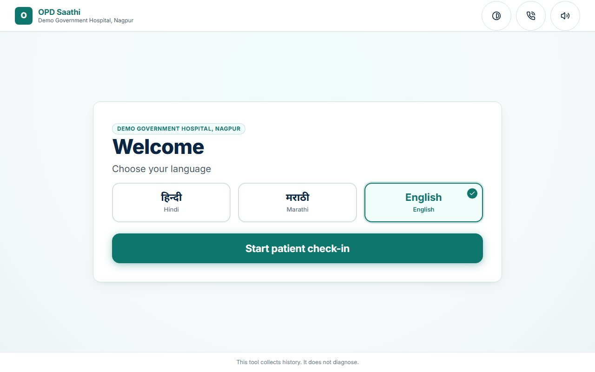
The patient taps हिन्दी, मराठी or English and Start patient check-in. The kiosk starts a server session (POST /intake/sessions), which creates a visit in the registering state and returns a two-hour patient token and the consent notice in that language.
Everything after this point happens in the chosen language and can be switched mid-way; earlier answers are kept as given. The hospital's name is shown at the top of every kiosk screen.
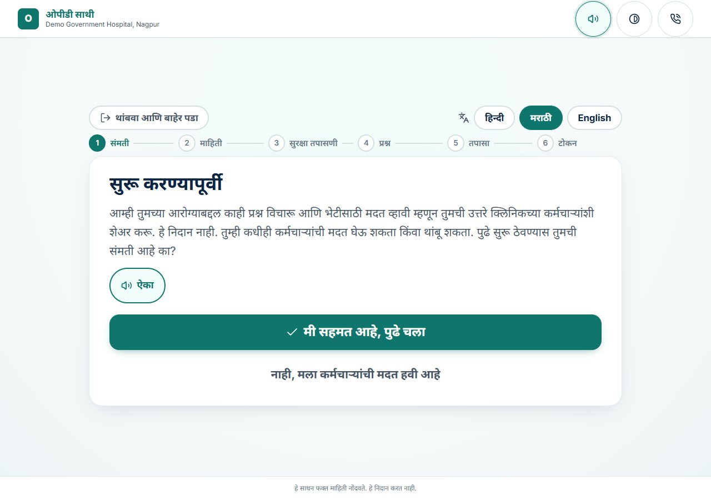
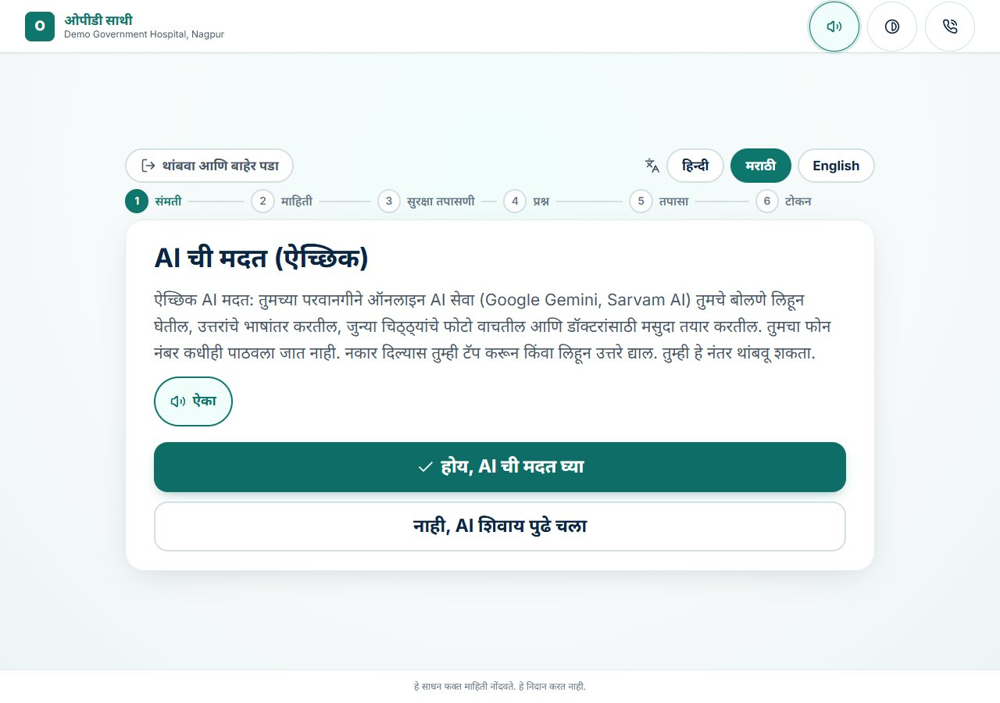
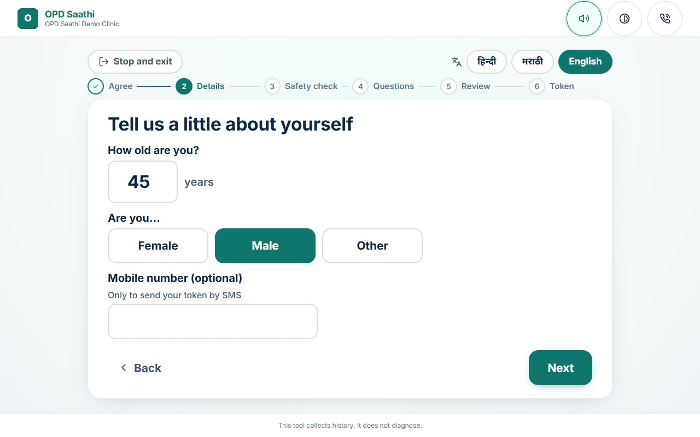
Age and sex shape the interview (no pregnancy questions for men or children) and the triage score. A mobile number is optional and is used only for SMS queue updates if the hospital connects an SMS provider. It is stored encrypted, with a keyed digest for lookup; a phone number never links records by itself, because families share phones.
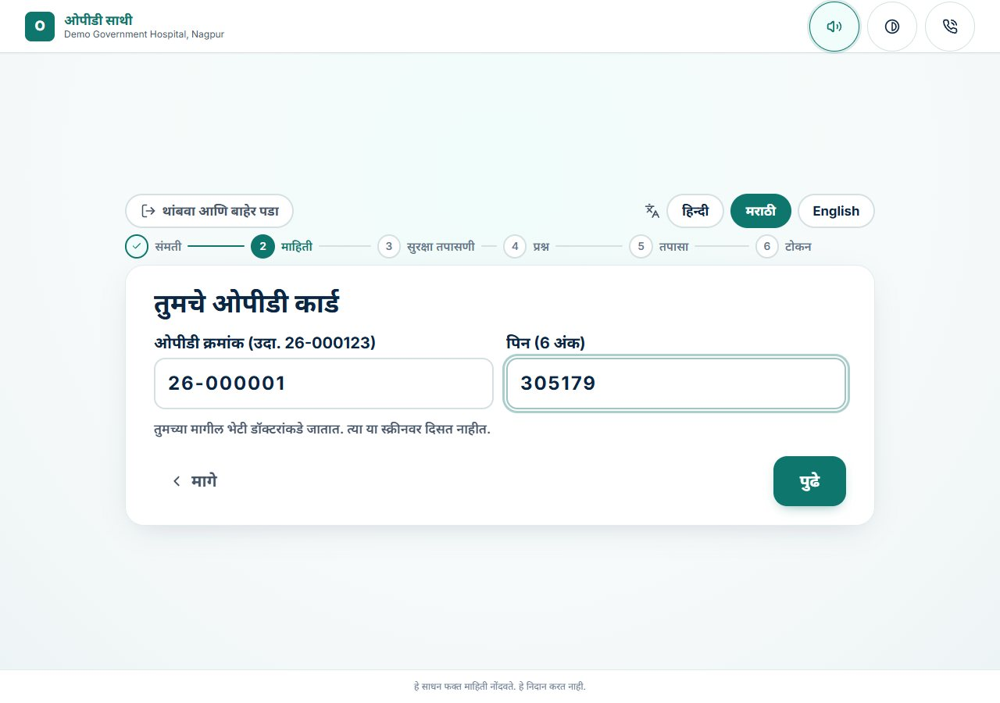
After age and sex the kiosk asks "Have you visited this hospital before?". "Yes" opens this card step; "No" goes straight to the safety check. A nurse-assisted check-in skips it, because the nurse links records at the desk.
If the card links, the kiosk shows only the date of the last visit and asks whether today continues that visit (a follow-up) or is a new problem. The rules behind the card are below.
26-000123: year and a per-hospital sequence) when their first visit is confirmed, and a six-digit PIN. The PIN is derived with the hospital's HMAC key and is never stored (section 16.8).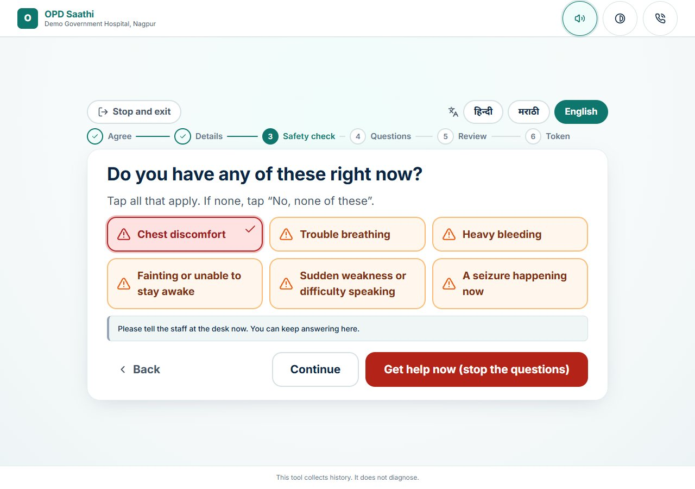
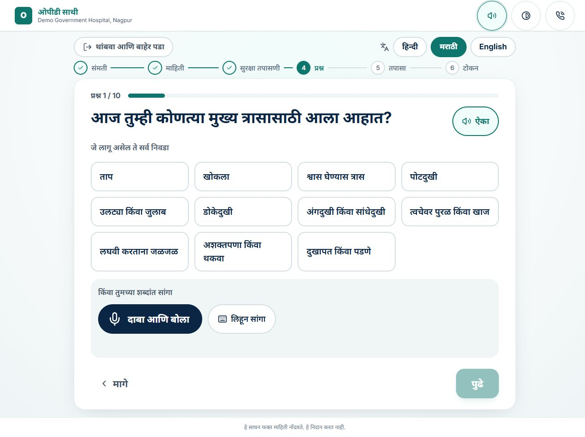
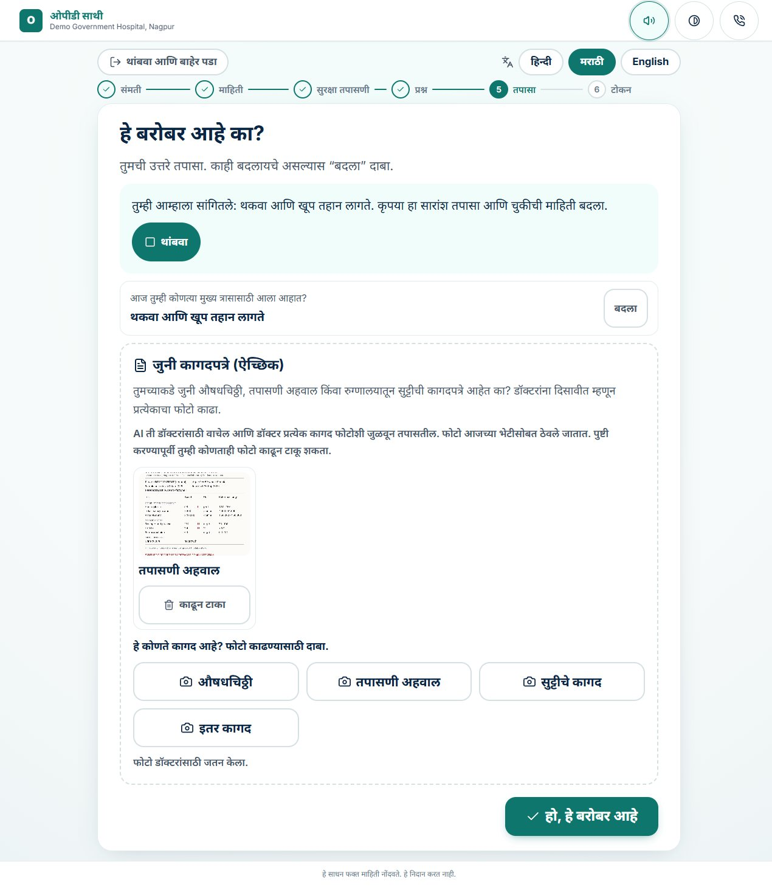
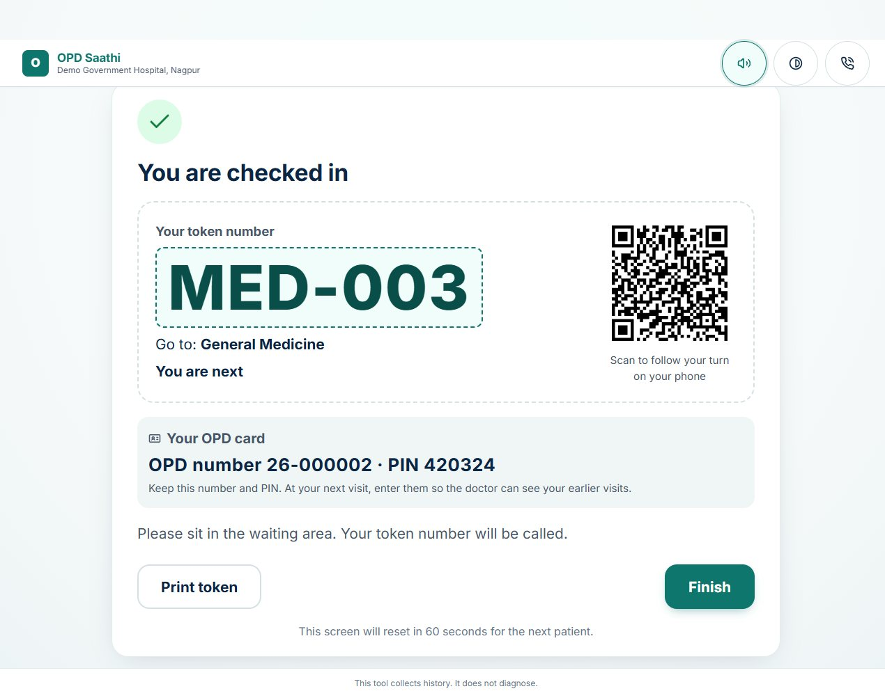
Confirmation (POST /intake/sessions/{id}/confirm) issues the day's token for the department (for example MED-003) exactly once, even if the request is repeated or sent twice at the same moment.
Print token prints a slip; Finish or 60 seconds of inactivity resets the kiosk for the next patient and clears everything from the browser. The QR opens the live status page (chapter 4); the OPD number and PIN let the patient link their next visit.
If the kiosk loses its connection (and the page is in a secure context, which Web Crypto needs), the welcome screen offers a short form: complaint, duration, severity, long-term conditions, medicines, allergies and danger signs, with the same consent first. The form is encrypted in the browser's IndexedDB with AES-GCM under a non-extractable key, and the patient gets a provisional receipt. When the connection returns, the kiosk replays each form once to POST /intake/offline-submissions with its idempotency key, through the regular intake engine; staff then confirm the real token. Sending twice can never create two visits, and records are deleted from the device after a confirmed sync.
/kiosk?activate=…) exchanges the code for a long-lived device secret; from then on the kiosk signs itself in (12-hour kiosk tokens, renewed with the secret), overnight and after restarts.Patients can check in on their own phones from a QR poster, and every patient can follow their turn live from the QR on their token. No app and no login are needed.
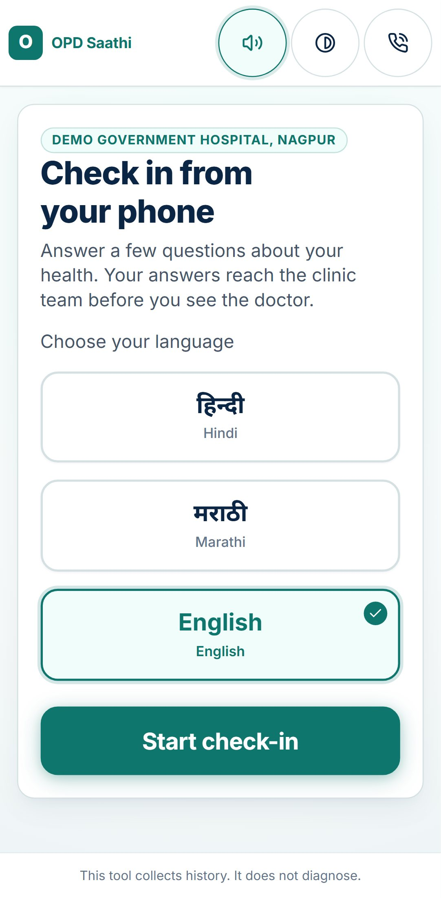
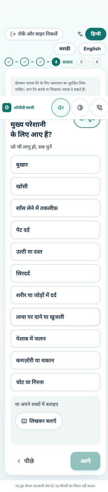
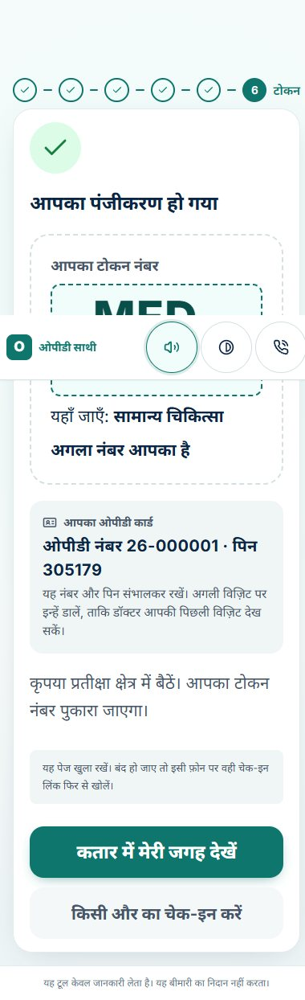
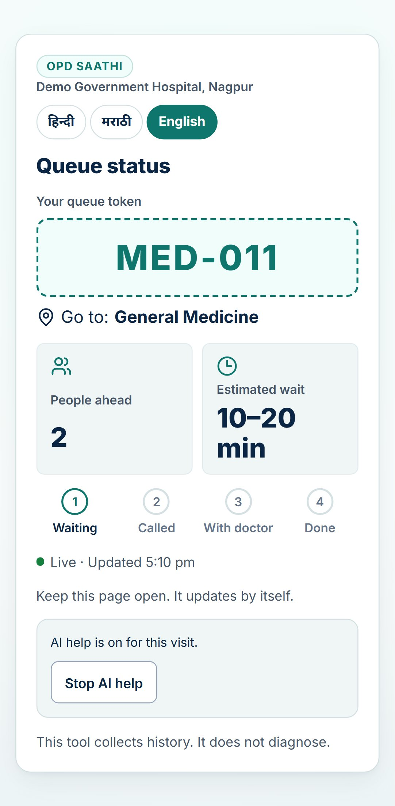
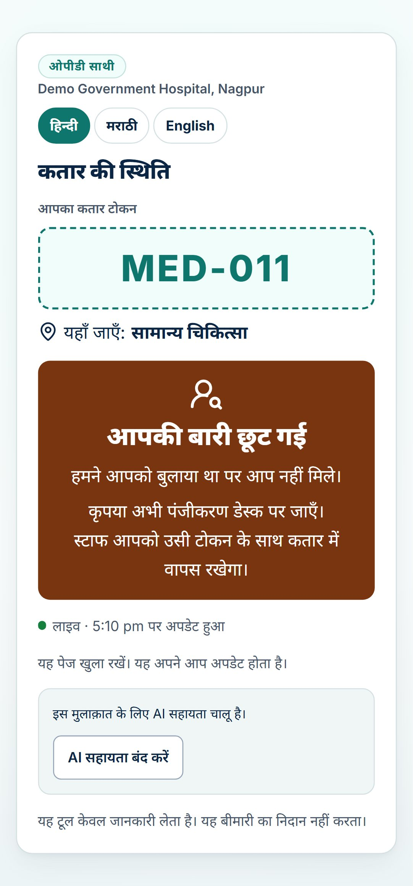
Nurses, doctors and administrators use one workspace at /staff. It works on laptops, tablets and phones; on a phone the sidebar becomes a top bar.
| Page | Nurse | Doctor | Administrator |
|---|---|---|---|
| Queue (live dashboard, home page) | ✓ own department | ✓ own department | ✓ every department |
| Consultations (case sheets) | read via queue/register | ✓ | ✓ |
| Patients (register, assisted registration) | ✓ | ✓ | ✓ |
| Reports | – | – | ✓ |
| Settings | – | – | ✓ |
The header shows the signed-in person, their role and a Live badge for the live connection (it turns to Reconnecting when the connection drops, and reconnects by itself, renewing an expired sign-in first). A role that opens a page it may not use is sent back to the queue; the server refuses the data anyway.
Today's waiting room for one department, in fair calling order, updating live. It is the home page for nurses and doctors.
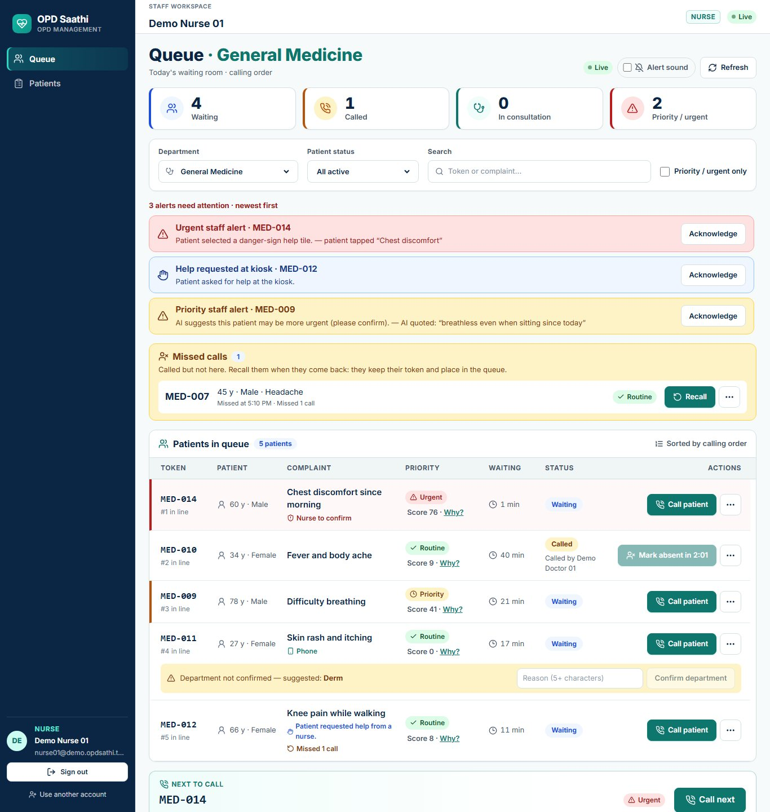
| Part | What it shows and does |
|---|---|
| Counters | Waiting, Called, In consultation, Priority/urgent. Clicking one filters the list. |
| Filters | Department (staff see their own; admins any), patient status, search by token or complaint, "Priority / urgent only". |
| Alerts | Newest first, each with an Acknowledge button and an optional alert sound:
|
| Missed calls | Patients who were called and did not come. They keep token and place; Recall puts them back (chapter 16.7). |
| Patients in queue | Token and place, age and sex, complaint in English, priority with the triage score and Why?, waiting time, status (with "Called by …"), and badges: Nurse to confirm for an unconfirmed danger sign, Phone for phone check-ins, "Patient requested help", "Missed 1 call". |
| Department not confirmed | When automatic routing was unsure, the row shows the suggestion; a nurse types a reason and confirms or changes the department. |
| Next to call | Who the server will call next, with Call next. Two doctors pressing it together get two different patients. |
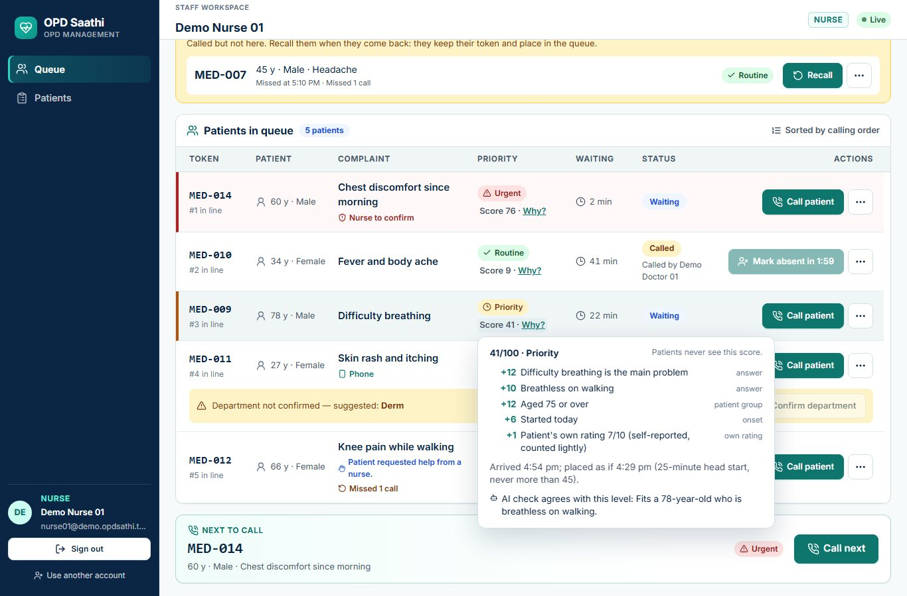
The score (0–100) adds points for danger signs and red flags, warning answers, age and pregnancy, recent onset, and, lightly, the patient's own 0–10 rating. Urgent patients go first; everyone else keeps arrival order with a head start of 0.6 minutes per point, never more than 45. The full rules and a worked example are in sections 16.3 and 16.4.
| Action | What happens |
|---|---|
| Call patient / Call next | A doctor's call reserves the patient for that doctor (one patient per doctor at a time); a nurse's call does not reserve. The status page and the board update live. |
| Start / Complete | Doctors start and finish the consultation (also from the consultation page). |
| Mark absent | Available after the hospital's grace period (3 minutes by default; the button counts down). The patient keeps token, urgency and arrival time and moves to Missed calls. |
| Recall | Back into the queue on the original arrival time, so normally next within their priority class. |
| Put back (⋯) | Undo a call made by mistake, with no missed call on record. |
| No-show (⋯) | Only for a patient already marked absent who has left. |
| Change priority / department (⋯) | Nurses and admins, with a written reason; recorded in the audit log. Urgency never drops without such a decision. |
| Acknowledge | Clears an alert and, for a danger sign, removes "Nurse to confirm". |
| Open case sheet | Opens the consultation workspace for that visit. |
Every action carries an Idempotency-Key, so a double click or a retried request never repeats it, and every action is checked on the server against the staff member's department.
| Action | Doctor | Nurse | Administrator |
|---|---|---|---|
| Call a patient, call next | Yes (reserves the patient) | Yes (no reservation) | Yes |
| Start, complete a consultation | Yes, unless another doctor has the patient | No | Yes |
| Mark absent, put back | Yes, unless another doctor has the patient | Yes | Yes |
| Recall, mark no-show | Yes | Yes | Yes |
| Cancel a visit | No | Yes | Yes |
| Change priority or department (with a reason) | No | Yes | Yes |
| Link a returning patient at the desk | No | Yes | Yes |
| Set the grace period | No | No | Yes |
Everything is limited to the staff member's own department; a visit in another department is reported as "not found". Administrators act across the hospital. Source: docs/QUEUE_POLICY.md.
A patient who forgot their OPD card can be linked by a nurse: search by OPD number or phone number (results show OPD number, age, sex, visit count and last visit date, never names or clinical details), confirm identity in person, then link. A record created at check-in for someone who registered as new is emptied and its number retired. Linking is refused when both records already have history: there is no automatic merge. The search (patient.lookup) and the link (queue.patient_linked) are audited, and the doctor's view shows that staff made the link.
Left: today's patients. Right: one patient's case sheet, organised into tabs so the doctor sees what matters first: red flags, the AI draft to check, the complaint, then the details one click away.
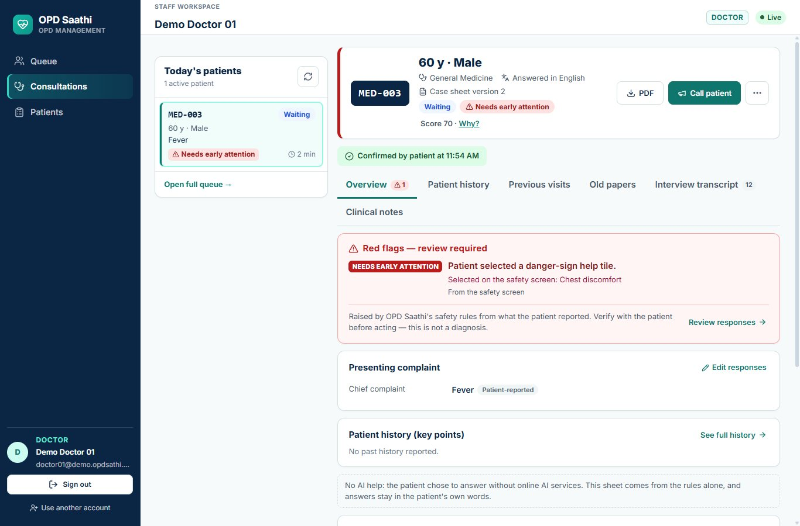
N back to the queue, E edit, P print; stop AI help at the patient's request).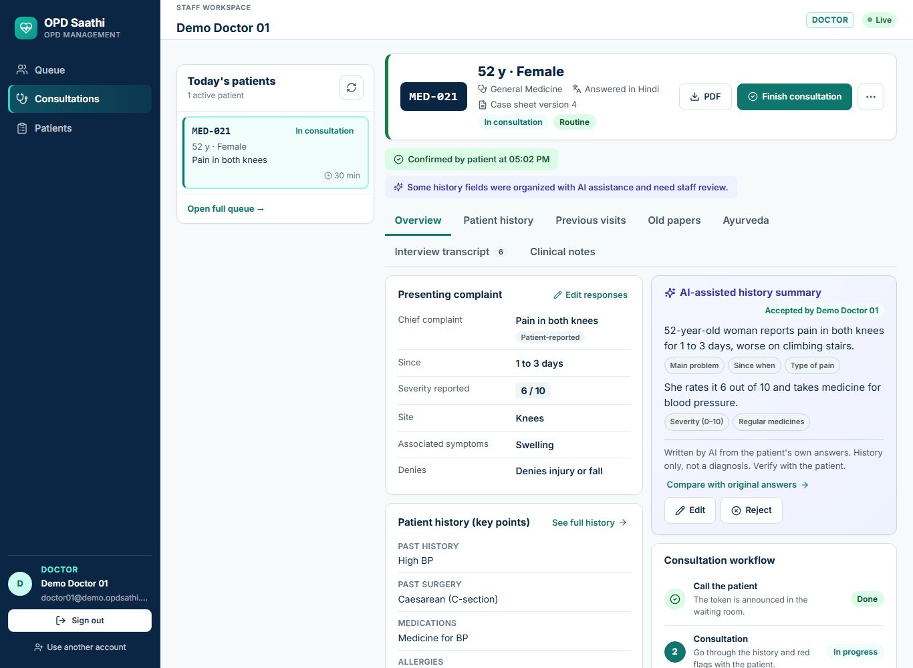
question_ids of the answers that support it. The server keeps only citations to questions this patient was actually asked and drops any sentence left without one; the output guard checks every sentence.If-Match), audited and limited to doctors of the treating department.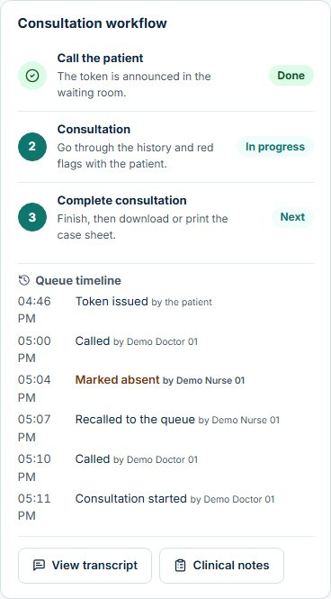
Below the draft come the presenting complaint (complaint, since when, severity, site, character, associated symptoms, denials) and the key history points (past illnesses, operations, medicines, allergies, family, tobacco and alcohol, open questions), each with "See full history".
The consultation workflow card follows the visit's real state: call the patient → consultation → complete. Under it, the queue timeline lists every change to the visit, who made it and when: token issued by the patient, called by the doctor, marked absent by a nurse, recalled, called again, consultation started. The timeline is append-only: the application can add entries but never change or delete them (GET /visits/{id}/queue-events, staff of the visit's department only).
When the patient said no to AI help, the overview says so plainly: the sheet comes from the rules alone and the answers stay in the patient's own words (figure 7.1).
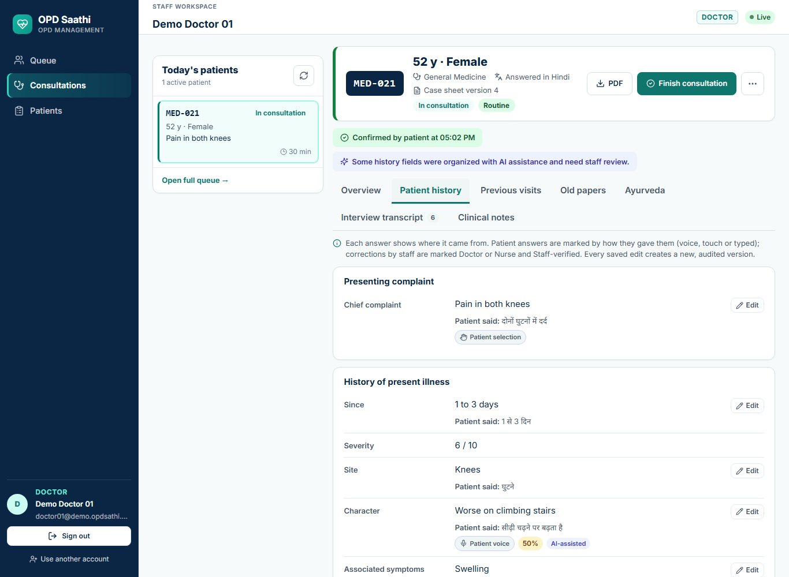
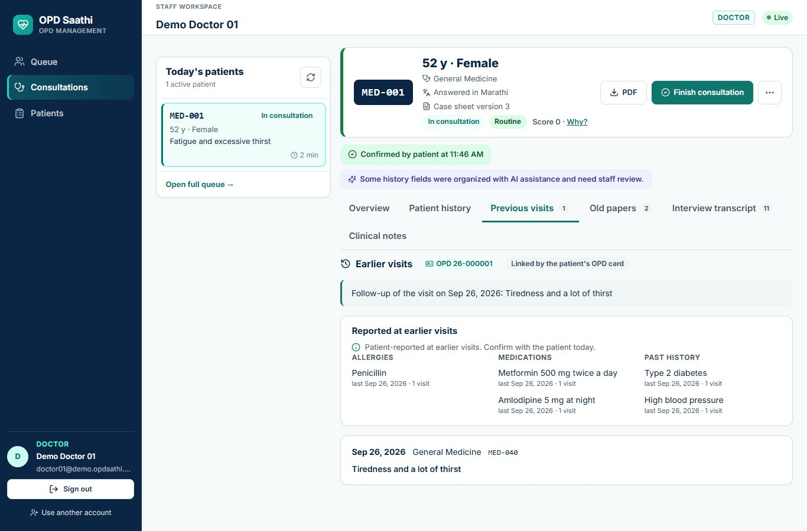
Up to 20 earlier visits at the same hospital: date, department, token, complaint, red flags and the AI brief (marked when staff edited the sheet), plus allergies, medicines and conditions with the date each was last reported, labelled "patient-reported, confirm today". Doctors and nurses see it only through a visit of their own department that is still open or took place today; once that visit is closed and in the past the server answers HISTORY_CLOSED. Administrators can read it through any visit. Every read is audited (patient_history.read). Records are never shared between hospitals.
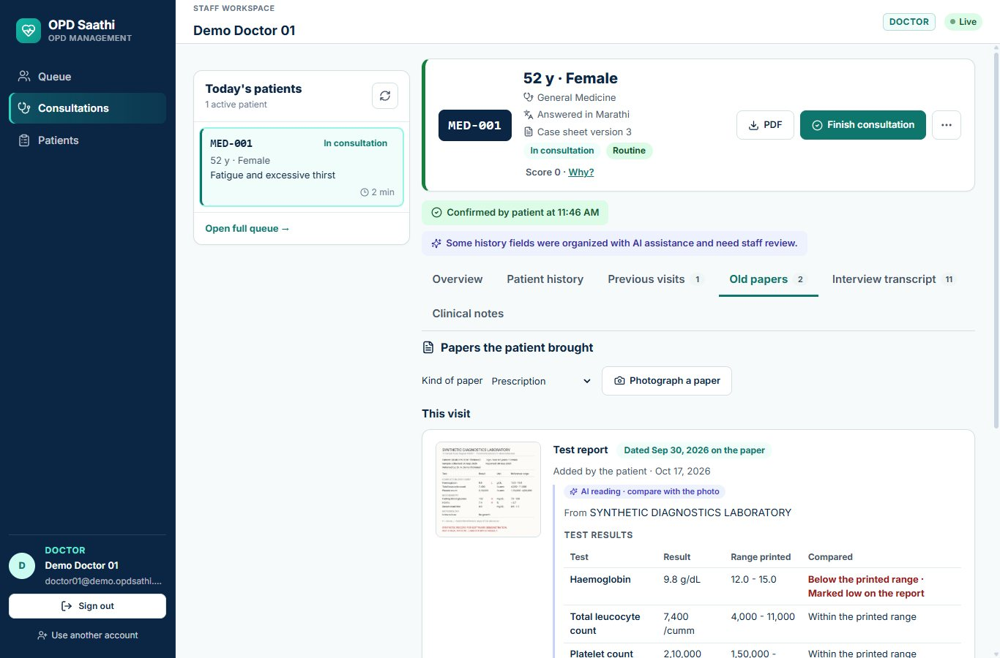
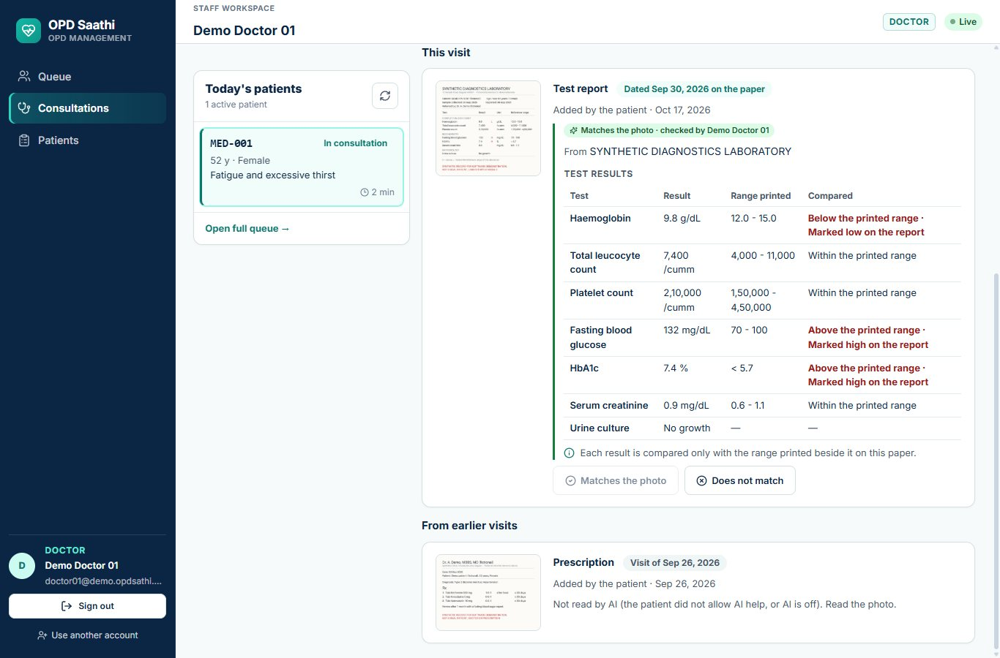
Cache-Control: no-store, and every view of a photo is audited.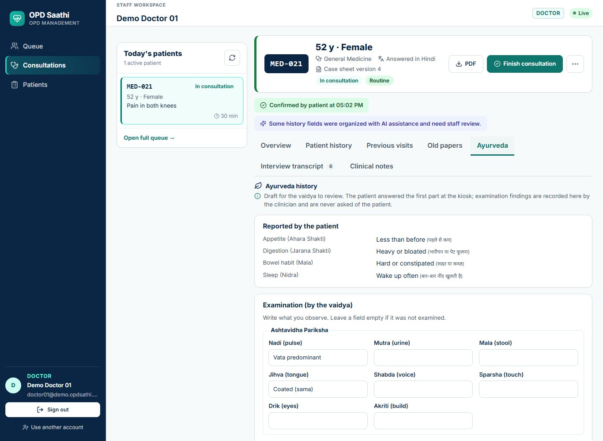
The patient answers six questions at the kiosk: appetite (Ahara Shakti), digestion (Jarana Shakti), bowel habit (Mala), sleep (Nidra), capacity for exertion (Vyayama Shakti) and diet. The clinician records 16 examination findings that are never asked of the patient: Ashtavidha Pariksha (Nadi, Mutra, Mala, Jihva, Shabda, Sparsha, Drik, Akriti) and Dashavidha items (Prakriti, Vikriti, Sara, Samhanana, Pramana, Satmya, Sattva, Vaya). Everything is labelled a draft for the vaidya's review.
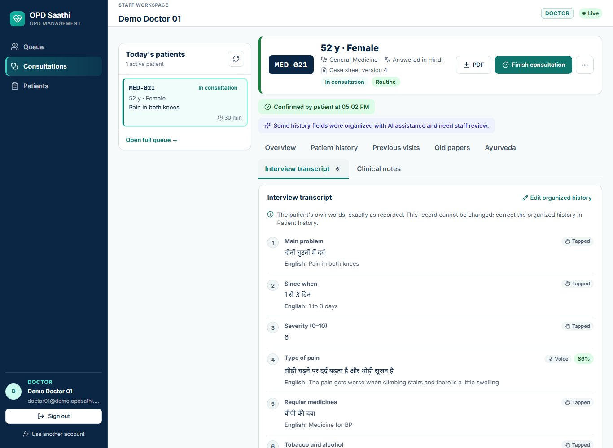
Clinical notes holds the doctor's own examination findings, assessment, plan and follow-up date, written by the doctor and never by AI. Each save is a new version, the earlier versions stay readable, and a save that does not start from the latest version is refused, so two doctors cannot overwrite each other. Doctors of the visit's department can write notes while the patient is under care (the visit is open, or it is today's); nurses and administrators read them. The latest version is printed on the case sheet PDF, apart from the history. Below the notes are staff edits to the case sheet, its version, and the corrections the patient made before confirming.
PDF or Print always produces the full case sheet, whichever tab is open: a compact, multilingual, history-only document rendered on the server (WeasyPrint, with Inter and Noto fonts so Hindi and Marathi print correctly). It includes the reviewed AI summary with the reviewer's name (never a rejected draft), open questions, the Ayurveda section when present, and the disclaimer "History only. Not a diagnosis."
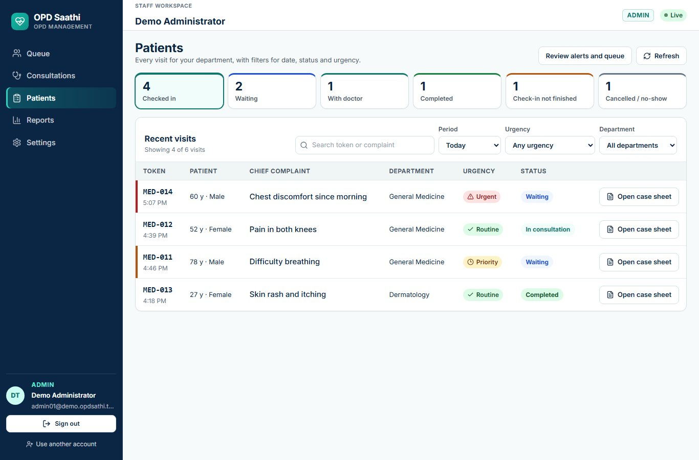
nurse; staff cannot skip it. The visit then follows the same interview, safety rules and queue as a kiosk check-in.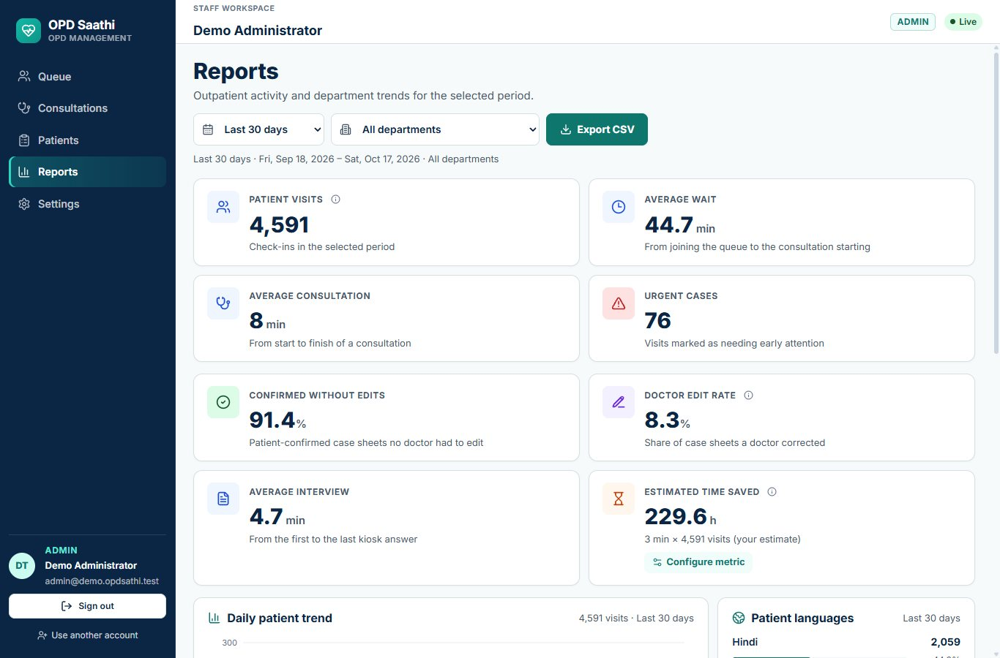
Filters (Today, 7, 30 or 90 days, and department) control every card, the chart and the CSV export, so all numbers describe the same period.
| Card | Meaning |
|---|---|
| Patient visits | Every check-in in the period, including patients not yet seen. A patient who comes twice counts twice. |
| Average wait | From joining the queue to the consultation starting. |
| Average consultation | From the start to the finish of a consultation. |
| Urgent cases | Visits marked as needing early attention. |
| Confirmed without edits | Of the case sheets patients confirmed, the share no doctor needed to change: a measure of how accurate the kiosk history is. |
| Doctor edit rate | Of visits that produced a case sheet, the share a doctor corrected. |
| Average interview | From the first to the last kiosk answer. |
| Estimated time saved | Visits × the minutes of history-taking each interview is assumed to save (an administrator sets it, 0–60 minutes, default 3; every change is audited). Clearly labelled an estimate. |
=, +, -, @, a tab or a carriage return are prefixed with an apostrophe so a spreadsheet cannot run them as formulas.Administrators run the hospital from Settings, with three tabs: Users, Kiosks and Departments. No commands are needed day to day.
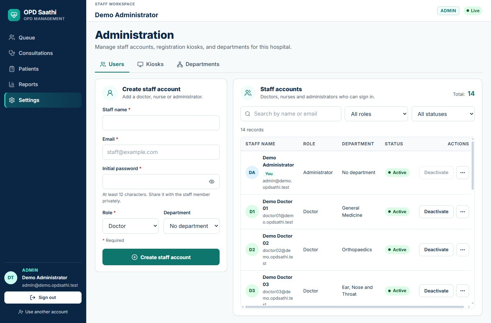
create-admin recovers a locked-out administrator.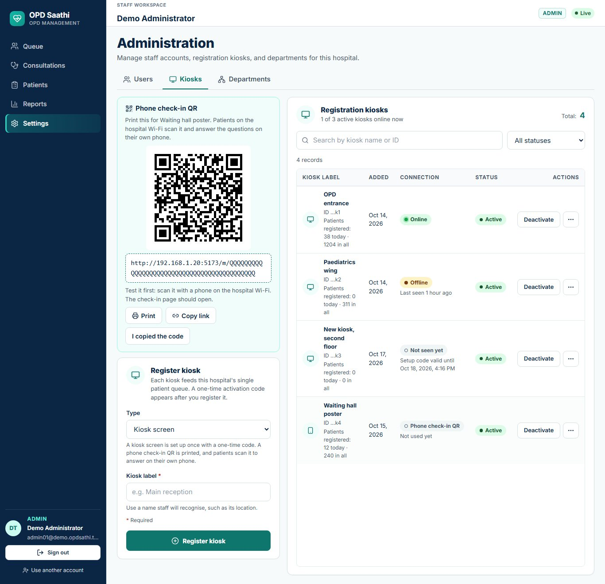
| Action | What happens | To undo |
|---|---|---|
| Deactivate | The kiosk shows "This kiosk is turned off" and cannot start check-ins; it stays paired. | Activate: works at once. |
| New activation code | A new device can take over; the old one is signed out once it does; history kept. | Not needed. |
| Replace QR (phone) | Old posters stop working at once; print the new QR. | Not possible; print the new one. |
| Delete | The device stops working immediately and leaves the list; patients it registered stay in their records. | Register a new kiosk. |
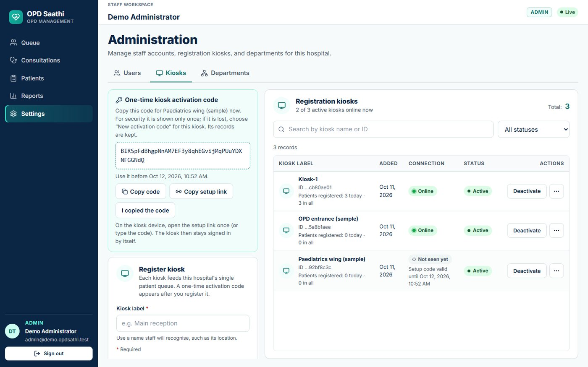
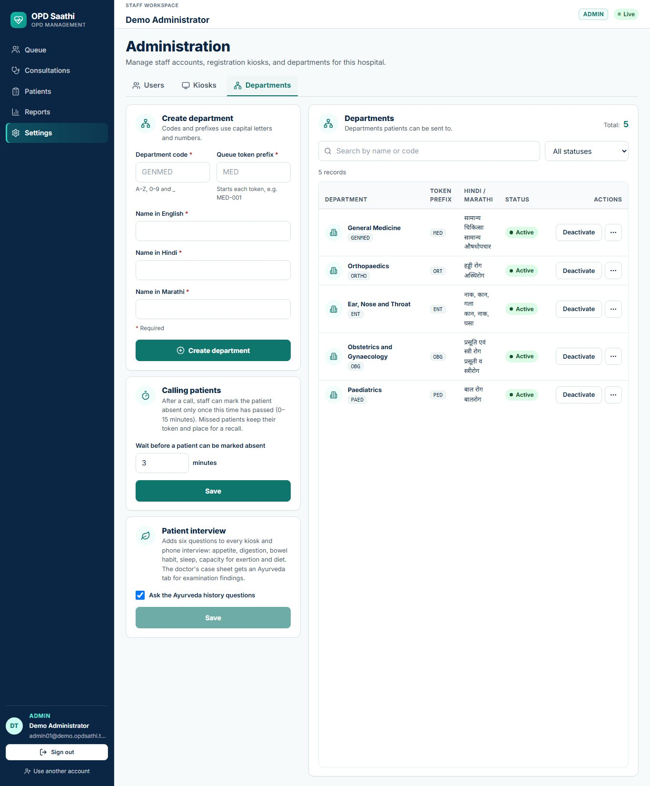
_, e.g. CARDIO), a token prefix of up to 8 capitals or digits (CAR gives CAR-001), and names in English, Hindi and Marathi.GENMED ORTHO ENT OBG PAED DERM OPHTH SURG; other departments receive patients sent by staff.AI makes OPD Saathi friendlier and faster, but it is optional twice over: the hospital must switch it on, and each patient must say yes. Without it, every core feature still works.
services/api/app/api/v1/ai_gate.py).| Feature | With AI (patient said yes) | Without AI |
|---|---|---|
| Speech to text | Sarvam (best for Hindi/Marathi), else Gemini; the words appear for checking | Tap and type (and, only with consent, the browser's own recogniser) |
| Reading aloud | Natural Indian voices (Sarvam Bulbul or Gemini TTS) for the patient's own read-back | Recorded question audio (hospital text) and the device's voice |
| Follow-up questions | Up to 3 complaint-specific questions in three languages, validated, labelled | The fixed, logical bank flow |
| English case sheet | Every answer translated; a cited brief for the doctor to review | Tapped answers translated from the bilingual bank; spoken/typed words kept in the patient's language |
| Safety second opinion | The model may add a red flag, quoting the patient; it counts as priority at most until a nurse confirms | Rules engine only |
| Triage double-check | "AI agrees" or "AI suggests more urgent (please confirm)" next to the score | Score from the rules |
| Department suggestion | A configured-label classifier; disagreement with the rules goes to a nurse | Keyword routing |
| Old papers and prescriptions | Read into drafts the doctor accepts or rejects; prescription names confirmed by the patient | Photos kept unread for the doctor; prescription scan hidden |
| Routing, queue, tokens, reports | Always rules-based and identical with or without AI | |
Providers today: Google Gemini (language model, also speech and reading photos) and Sarvam AI (Indian-language speech and voices). PROVIDER_MODE=demo-safe replays canned, non-clinical fixtures for offline rehearsals. Before real patient data, the hospital needs paid or enterprise provider agreements with data-processing terms (Phase 7 task 7.5.9).
setup-hospital.ps1 (chapter 23).setup-hospital.ps1 -AddHospital.As many as the hospital needs. Every kiosk and phone QR belongs to one hospital and feeds that hospital's department queues: 100 kiosks still mean one General Medicine queue, in fair calling order. Tokens are numbered per department per day (MED-001, MED-002…) whichever kiosk the patient used.
A second hospital was set up and checked live: its patient appeared only in its own queue, and neither hospital could open, call, change or delete the other's patients, staff or kiosks (20 of 20 checks). The automated isolation tests probe every route that names a record as another hospital, another department and another patient (section 19.5).
The architecture, the technology, every algorithm with its exact numbers, the data model, the API, security, offline behaviour and how quality is measured.
A local-first system: one React web app for every screen, a stateless FastAPI server, PostgreSQL as the source of truth, Redis for live state, and a background worker, all started with Docker Compose on one hospital server.
| Component | Responsibility |
|---|---|
Web app (apps/web) | One React + TypeScript single-page app for the kiosk, the phone pages and the staff workspace, built with Vite, served as static files by nginx, installable as a PWA. Staff screens and their strings are lazy-loaded chunks, so the kiosk loads fast. |
nginx (infra/web) | Serves the app with security headers and a strict CSP, and proxies /api to the API (HTTP, server-sent events and WebSockets), so kiosks, staff PCs and phones all need only one address and port. |
API (services/api/app) | FastAPI with Pydantic models. Thin routers in api/v1; all SQL in db/repositories.py; pure, I/O-free rules in domain; provider adapters and AI guard-rails in ai; security primitives in core. Stateless: any number of processes can run. |
| PostgreSQL 16 | Source of truth for every record: hospitals, staff, kiosks, patients, visits, consents, interview turns, case sheets, red flags, documents, the queue timeline, notifications, the outbox and the audit log. Row-level security per hospital; four database roles with least privilege. |
| Redis (state) | The queue read model (a sorted set per department), sequenced live deltas over pub/sub, intake sessions (2 h), rate-limit windows, idempotency records (24 h), per-session locks and the AI call budget. Durable (AOF every second, no eviction); the queue can always be rebuilt from PostgreSQL. |
| Redis (cache) | A separate, bounded, evictable cache (256 MB, LRU) for fixed generic text. Losing it loses nothing clinical. |
| Worker | ARQ cron jobs: the outbox relay and notification delivery every 2 seconds, the analytics rollup every 5 minutes, the end-of-day close-out four times an hour, and a queue rebuild at start-up. It uses a restricted database role. |
outbox row in the same transaction. The worker relays unprocessed rows every 2 seconds (FOR UPDATE SKIP LOCKED, up to 100 at a time), so the Redis read model converges even if the API crashed after committing.cli queue-rebuild does it on demand.| Channel | Used by | How |
|---|---|---|
WebSocket /ws/staff/queue | Queue boards | Authenticates with the first frame (the staff token); then forwards queue deltas and hospital alerts for the staff member's department; re-checks the account every minute; re-raises unacknowledged urgent alerts every 60 s; closes 4401 at sign-in expiry and 4403 on deactivation. |
Server-sent events /status/{token}/stream | Patient status page | Pushes the visit's state when its Redis status channel fires; the page falls back to polling /status/{token} (cached 2 s). |
WebSocket /ws/intake/{visit}/audio | Kiosk voice answers | Streams microphone audio for live transcription (Sarvam realtime) with the patient's session; audio is never stored. Short clips can also be sent to /transcribe. |
| ADR | Decision | Why |
|---|---|---|
| 001 | Locked stack: React/Vite/TS, FastAPI/Pydantic/SQLAlchemy, PostgreSQL, Redis, Docker Compose | One documented, testable path; no new framework, database or major library without an ADR and the owner's approval. |
| 002 | MVP substitutions behind production module boundaries | A small team can build and demonstrate locally while keeping an upgrade path (Compose and in-app JWT now). |
| 003 | Sarvam realtime speech-to-text over WebSocket; REST for short clips | Partial transcripts while the patient speaks; Indian-language accuracy; audio never retained. |
| 004 | Gemini with JSON-schema structured output, re-validated locally | Schema validity does not mean semantic safety, so every value is checked again; bounded calls, redaction, deterministic fallback. |
| 005 | Sarvam Bulbul TTS, Google TTS as a secondary adapter | Natural Indian voices; fixed UI audio pre-generated and cached; patient read-back synthesised in memory only. |
| 006 | Temporary CI waiver for one advisory in the CI-only Semgrep lock | Semgrep pins mcp==1.29.0; the app's own lock is audited with no exceptions. |
| Layer | Technology (version in the lock files) | Used for |
|---|---|---|
| Web | React 18.3, TypeScript 5.7, Vite 7 | Single-page app for kiosk, phone and staff; route-level code splitting |
| react-router 7, TanStack Query 5, TanStack Virtual 3, zustand 5 | Routing; server state and caching; virtualised long lists (5,000-row queue); small client state | |
| i18next 24 + react-i18next 15 | English, Hindi, Marathi in five namespaces; staff strings lazy-loaded | |
| Tailwind CSS 4, lucide-react icons, Inter and Noto Sans Devanagari (self-hosted) | Styling and type that renders Devanagari correctly offline | |
| vite-plugin-pwa 2 (auto-update) | Installable app, precached shell and prompt audio, offline short form | |
| react-hook-form, zod, qrcode.react | Forms and validation; token and check-in QR codes | |
| API | Python 3.12, FastAPI 0.142, Pydantic 2.13, pydantic-settings | HTTP and WebSocket API, typed models, settings with production checks |
| SQLAlchemy 2.1 (async) + asyncpg 0.31, Alembic 1.20 | Database access (hand-written SQL in one repository module) and 22 reversible migrations | |
| Gunicorn 26 with Uvicorn workers | Process management (2 workers by default) | |
| redis-py 5.3, ARQ 0.28 | Redis state, Lua scripts, pub/sub; the background worker | |
| argon2-cffi, PyJWT 2.15, cryptography 50 | Argon2id passwords; HS256 tokens; AES-256-GCM and HMAC-SHA256 | |
| google-genai 2.28, httpx, websockets 16, jsonschema 4.26 | Gemini; Sarvam REST/WebSocket; validating every model answer | |
| WeasyPrint 70, Pillow 12, structlog 26, PyYAML | Case-sheet PDF; image checks and demo papers; structured logs; rules and weights files | |
| Data | PostgreSQL 16.9, Redis 7.4.2 (two instances) | Records with row-level security; durable state and an evictable cache |
| Run | Docker Compose; nginx 1.27; optional Prometheus 3.5 + Grafana 12.1 | One-command start (start-demo.ps1, setup-hospital.ps1); local metrics |
| Quality | pytest (+ coverage), Vitest 4, Playwright 1.63 + axe-core, Lighthouse CI | API unit and integration tests, web unit tests, browser tests with accessibility scans, performance budgets |
| ruff, mypy --strict, ESLint 10, TypeScript, Prettier | Lint and types on every change | |
| Bandit, Semgrep, pip-audit, npm audit, Gitleaks | Security checks in CI | |
| AI | Google Gemini (gemini-3.5-flash-lite, fallback gemini-3.1-flash-lite, TTS gemini-3.8-flash-tts); Sarvam (saaras:v3-realtime, saaras:v4 clips, bulbul:v3 voices) | Optional; selected by configuration ("auto" uses whichever keys are present) |
OPD-Sathi/
├─ apps/web/ React app
│ ├─ src/app/ screens: KioskIntake, KioskWelcome, KioskPapers, MobileCheckin,
│ │ PatientStatus, StaffQueueBoard, DoctorConsultation, DocumentsPanel,
│ │ PreviousVisits, AyurvedaPanel, NurseConsole, AnalyticsDashboard,
│ │ AdminConsole, QueueSettingsCard, InterviewSettingsCard, router.tsx
│ ├─ src/lib/ api client, staff auth, intake client, voice, offline outbox,
│ │ photos, ids (secure-context safe), generated api-types.ts
│ ├─ src/locales/{en,hi,mr}/ common, kiosk, intake, status, staff strings
│ ├─ public/audio/ pre-recorded prompt audio per language
│ └─ e2e/ Playwright specs (23 files)
├─ services/api/
│ ├─ app/main.py app factory, middleware, health, metrics
│ ├─ app/config.py settings and production checks
│ ├─ app/api/v1/ routers: auth, admin, audit, analytics, intake, audio, queue,
│ │ case_sheets, documents, speech, ai_gate, visit_access
│ ├─ app/domain/ interview (engine, bank JSON, consent texts), redflags (rules.yaml),
│ │ triage (weights.yaml), routing, queue (state, scoring, tokens,
│ │ Redis model), case_sheet, documents, patients, checkin
│ ├─ app/ai/ summary, follow-ups, extraction, second opinion, triage review,
│ │ department classifier, prescription, papers, speech, output guard,
│ │ providers/{llm,stt,tts}
│ ├─ app/core/ security, crypto, auth gate, rate limit, idempotency, audit, errors
│ ├─ app/db/ session (tenant scope) and repositories (all SQL)
│ ├─ app/workers/main.py outbox relay, notifications, analytics, close-out
│ ├─ app/cli.py, app/pdf.py operator commands; case-sheet PDF
│ ├─ migrations/versions/ 0001 … 0022
│ ├─ scripts/ init-db, retention, schema/OpenAPI writers, demo papers
│ └─ tests/ unit, integration (real PostgreSQL + Redis), perf
├─ eval/ red-flag, routing, interview, extraction, adversarial sets
├─ infra/ nginx config, observability, k6, chaos compose files
├─ scripts/ backup.sh, restore.sh, lan-check.ps1, demo-check.ps1, chaos
├─ docs/ plans, policies, privacy, evaluation, this documentation
├─ docker-compose.yml, Makefile, .env.example
└─ start-demo.ps1, setup-hospital.ps1
Where to look first: the interview starts in domain/interview/engine.py; urgency in domain/redflags/engine.py and domain/triage/score.py; the queue in domain/queue/ and api/v1/queue.py; everything that touches the database in db/repositories.py; the kiosk in apps/web/src/app/KioskIntake.tsx.
Every decision OPD Saathi makes about a patient comes from deterministic, readable rules in the domain package: no network, no database, no AI. AI output enters only as validated data and can only add caution. All rule files are marked draft_needs_clinician_review, and the loaders refuse them otherwise.
services/api/app/domain/interview/engine.py holds the interview as an immutable state (language, queued and asked question ids, answers, red-flag ids, AI questions, sex, age, extra modules). Every function returns a new state; the API stores it in the Redis session and every answer also as an encrypted interview_turns row.
chief_concern (11 tiles plus free text), duration (today, 1–3 days, 4–7 days, 1–4 weeks, more than a month) and severity (0–10 scale).bank/triggers.json; up to two modules are chosen, in bank order. Some phrases are ignored per module so they do not trigger wrongly (for example "fell ill" or "hair fall" never trigger the injury module).| Module | Triggered by (examples; every language) | Questions |
|---|---|---|
| fever | fever, temperature, बुखार, ज्वर, ताप | fever pattern; associated symptoms (rash…) |
| respiratory | breath, cough, wheez, phlegm, साँस, खाँसी, खोकला, धाप, कफ | breathing symptoms (blood in phlegm, breathless, wheeze…); TB contact, weight loss |
| digestive | stomach, abdomen, vomit, loose motion, पेट, उल्टी, पोट, जुलाब | stomach symptoms; where it hurts |
| urinary | urine, urinat, पेशाब, लघवी | urine symptoms; associated (flank pain, swelling) |
| pain | pain, ache, sore, headache, दर्द, वेदना, दुखत | where; what it is like (spreading…) |
| skin | skin, rash, itch, त्वचा, खुजली, पुरळ | skin problem; where |
| mobility (injury) | injur, fall, accident, fracture, sprain, bite, चोट, अपघात | what happened (road accident, animal bite…); effect (cannot walk, wound…) |
| sleep_energy | tired, weak, fatigue, sleep, dizz, थकान, चक्कर, थकवा | tiredness, dizziness, weight loss, night sweats |
A question (and each of its options) can declare who it applies to: only_sexes, min_age/max_age, hide_with_modules (skip when another module covers it) and hide_with_answers (skip when an earlier answer makes it pointless). A question whose real options are all hidden is skipped; one listed under skip_if_only_concerns is skipped when the patient only tapped those concerns. The progress bar shows answered + remaining, never more than the cap.
| Answer | Case-sheet field |
|---|---|
| chief_concern, duration, severity | chief complaint; HPI onset; HPI severity (0–10) |
| pain / digestive site / skin site | HPI location (first one answered) |
| pain character / fever pattern | HPI character |
| other symptom questions, AI follow-ups | HPI associated symptoms (up to 30) |
| past_history, surgeries, pregnancy | past conditions, operations, women's health |
| medications, allergies, family_history | medicines (patient-stated), allergies, family history |
| habits | social: tobacco (smoking, chewing), alcohol, other habits in the patient's words |
| Ayurveda answers | ayush: appetite, digestion, bowel, sleep, exercise, diet |
| "None of these" | a pertinent negative listing what was offered: "Denies vomiting, loose motions, …", "No family history of diabetes, high BP, …", "No known drug or food allergy", "No previous operations" |
| "Don't know", "Prefer not to say" | unanswered: "Does not know: …" / "Preferred not to say: …", never a denial |
Each text field keeps the patient's original words and an English version: a tapped option uses its bank English label (confidence 0.9), so the doctor gets English even without AI; typed or spoken words stay as said (0.5) until AI translation, which is marked "AI-assisted". The sheet is validated against the strict, versioned CaseSheet schema (domain/case_sheet.py, schema 1.0; CI fails if the published JSON schema drifts).
domain/redflags/engine.py evaluates 15 rules from rules.yaml against the patient's text and facts after every answer. Results are deduplicated, ordered and stored once per visit and rule (red_flag_events); an urgent flag raises a staff alert at once.
tile_any (a danger tile tapped), min_age/max_age, sex_any, pregnant, severity_min. A rule whose conditions fail is skipped.RF_CHEST_PAIN_ASSOC (urgent) does not fire; RF_CHEST_PAIN (priority) does.| Rule | Level | Conditions | Phrases (English examples; every rule also has Hindi, Marathi and Hinglish) |
|---|---|---|---|
RF_DS_TILE | urgent | any danger tile | (tile only) chest, breathing, bleeding, fainting/fits, stroke signs… |
RF_CHEST_PAIN_ASSOC | urgent | – | chest pain / pressure / tightness and sweating / breathless / left arm pain |
RF_CHEST_PAIN | priority | – | chest pain, chest pressure, chest tightness |
RF_BREATH_SEVERE | urgent | – | cannot breathe, cannot speak full sentences, severe breathlessness, blue lips |
RF_STROKE_SIGNS | urgent | – | face drooping, one-sided weakness, slurred speech, sudden vision loss |
RF_BLEEDING_HEAVY | urgent | – | heavy bleeding, vomiting blood, blood in stool |
RF_PREGNANCY_DANGER | urgent | pregnant | vaginal bleeding, severe abdominal pain, fits, baby not moving |
RF_CHILD_FEVER | urgent | age < 1 | fever, high temperature |
RF_CHILD_FEVER_ASSOC | urgent | age ≤ 4 | fever and fits / seizure / not feeding / very sleepy |
RF_SEIZURE_FAINT | urgent | – | seizure, fits, unconscious, fainted |
RF_SELF_HARM | urgent | hidden from patient | want to die, kill myself, harm myself, suicidal thoughts (private staff follow-up) |
RF_TRAUMA_MAJOR | urgent | – | road accident, fell from height, head injury with vomiting, deep wound |
RF_ALLERGY_SEVERE | urgent | – | throat or face swelling with breathing trouble, hives with breathing trouble |
RF_POISON_BITE | urgent | – | poison swallowed, overdose, snake bite, scorpion sting |
RF_HIGH_FEVER | priority | – | fever 104, temperature 104, very high fever |
Tapped answers count the same in every language. Three tapped options raise a rule directly, whatever the language of the label: blood in stool → RF_BLEEDING_HEAVY, very high fever → RF_HIGH_FEVER, road accident → RF_TRAUMA_MAJOR (option_flags in weights.yaml).
domain/triage/score.py adds up explainable points (0–100) from things that are hard to exaggerate, and only lightly from the patient's own rating. Every point is stored with its reason (the Why? panel). Weights live in weights.yaml (version 1, draft).
| Component | Points |
|---|---|
| Red flags | The first flag: urgent 70, priority 30 (an AI flag counts as priority). Each further flag +5, at most +15 together. |
| Warning signs (tapped answers) | Blood in phlegm 25 · difficulty breathing as main problem 12 · blood in urine 12 · animal bite 12 · breathless on walking 10 · very little urine 10 · bleeding or open wound 10 · lower-right abdominal pain 8 · swelling of feet or face 8 · cannot walk since injury 8 · injury or fall 6 · wheezing 6 · flank pain 6 · fever with rash 6 · wound not healing 6 · known heart disease 6 · TB at home 5 · weight loss 5/4 · spreading pain 5 · dizziness 5 · vomiting 4 · loose motions 4 · fever with shivering 4 · swelling after injury 4 · known diabetes 3 · night sweats 3. All together at most 25. |
| Vulnerability | Infant under 1: 20 · child 1–4: 10 · aged 75+: 12 · aged 65–74: 8 · pregnant: 12 |
| Onset | Started today: 6 · 1–3 days ago: 3 |
| Own rating (0–10) | 7 → 1 · 8 → 2 · 9 → 3 · 10 → 4. None for a problem lasting more than a month. |
| Patient | Points | Score | Level |
|---|---|---|---|
| 60 y man, taps Chest discomfort, started today | danger tile 70 + today 6 | 76 | urgent |
| 78 y man, main problem difficulty breathing, breathless on walking, started today, rates 7 | 12 + 10 + aged 75+ 12 + today 6 + rating 1 | 41 | priority |
| 34 y woman, fever with shivering for 1–3 days, rates 8 | 4 + 3 + 2 | 9 | routine |
| An adult who taps every warning sign that is not itself a red flag, started today, rates 10 | signals capped at 25 + today 6 + rating 4 | 35 | priority, never urgent |
With AI consent, a triage review (12 s, after confirmation) reads the whole interview and says whether the level fits. "More urgent" raises a priority alert for a nurse; "less urgent" is a note; a failure leaves the score alone. Its verdict never moves the queue by itself.
domain/queue/scoring.py turns the level and score into a virtual arrival time; lower is called first.
queued_at is kept through a recall, so a recalled patient returns to their original place. Ties are broken by visit id, which is a time-ordered UUIDv7. Visits from before the triage score existed use fixed bonuses (urgent 360, priority 45, vulnerable +15 minutes).| Patient | Arrived | Level, score | Head start | Virtual arrival | Called |
|---|---|---|---|---|---|
| A | 10:00 | routine, 9 | 5 min | 09:55 | 3rd |
| B | 10:15 | priority, 41 | 25 min | 09:50 | 2nd |
| C | 10:30 | urgent, 76 | – | – | 1st |
| D | 10:05 | routine, 0 | 0 min | 10:05 | 4th |
Call next runs this order on the server inside a department-wide transaction lock, so two doctors pressing it together get two different patients, and a doctor already holding a patient (called or in consultation) is refused with DOCTOR_BUSY.
Example: 5th in line, 2 doctors, 6-minute consultations → baseline 12 → "10–15 min". A five-minute range avoids a falsely precise promise.
domain/routing/engine.py chooses a department from the patient's stated concern by keyword modules, and sends anything unclear to a nurse.
SURG, confidence 0.90.OBG counts only for a woman aged 12–50 or a pregnant patient.PAED, 0.90.NURSE_TRIAGE, 0.0, needs nurse confirmation.| Said | Result |
|---|---|
| "joint pain since a week" | ORTHO, 0.90 |
| "ear pain with fever" | ENT (earliest) and GENMED matched → ENT, 0.65, nurse to confirm |
| "stomach lump" | SURG, 0.90 (surgery rule first) |
| 8-year-old, "cough" | PAED, 0.90 |
| "feeling tired" | NURSE_TRIAGE, nurse to confirm |
Kiosks start every patient in General Medicine; confirmation applies the route. With AI consent a department classifier (5 s, configured labels only) can suggest a department; disagreement with the rules goes to a nurse. Nurse confirmation (POST /queue/{id}/routing/confirm) and overrides are audited. Evaluation: 224/224 dev and 96/96 test cases (synthetic, section 21).
domain/queue/state.py). done, no_show and cancelled are final.| From | Allowed to |
|---|---|
| registering | awaiting_confirmation, cancelled |
| awaiting_confirmation | queued, cancelled |
| queued | called, cancelled |
| called | in_consult, skipped (after the grace period), queued (put back), cancelled |
| in_consult | done, cancelled |
| skipped | queued (recall), no_show, cancelled |
| done, no_show, cancelled | nothing (final) |
called or in_consult; called_by records who called. A doctor cannot act on another doctor's patient (CLAIMED_BY_ANOTHER_DOCTOR); a nurse or admin can mark that patient absent or put them back.skip.visit_events row (from, to, actor type and person, reason) and an audit record, and an outbox event for the live screens.| Value | How it is made | Why |
|---|---|---|
Token MED-007 | Department prefix + a daily number per hospital, department and IST date, at least three digits. Allocated under a PostgreSQL advisory lock as max(today's numbers) + 1, with a Redis counter as the fast path (a Redis outage falls back to the database). | Human-friendly, gap-free and unique even with many kiosks confirming at once. |
Status link /s/<43 chars> | HMAC-SHA256(APP_HMAC_KEY, "osa:status:v1:{hospital}:{visit}") in URL-safe base64 (256 bits). Only its SHA-256 digest is stored. | Unguessable, re-printable, reveals nothing, cannot be enumerated. |
OPD number 26-000123 | Year + a per-hospital, per-year counter (patient_number_counters), assigned at the first confirmed visit. | The hospital registration number on the card. |
| Card PIN (6 digits) | First 8 bytes of HMAC-SHA256(APP_HMAC_KEY, "osa:card-pin:v1:{hospital}:{patient}:{card_version}") mod 1,000,000. Compared in constant time. Never stored. | Proves the patient holds the card; a lost card is replaced by moving to the next version. |
| Phone check-in code | HMAC-SHA256 over hospital, check-in point and version (URL-safe, 43 characters); only a SHA-256 digest is stored for lookup. | The QR can be shown again any time and replaced at once. |
| Kiosk secrets | One-time activation code and the device secret: 256-bit random values stored as SHA-256 digests. | A stolen database does not reveal live credentials. |
ai/providers/llm/gemini.py).| Feature (module) | Time limit | Output and checks |
|---|---|---|
Follow-up questions (followup_questions.py) | background | ≤ 3 questions in en/hi/mr with tap options; unsafe or malformed ones dropped; bank used otherwise |
Clinical summary (clinical_summary.py) | 15 s | English fields + brief as cited sentences; original words never replaced; failure keeps the deterministic sheet |
Red-flag second opinion (redflag_opinion.py) | 5 s | Only rule ids from the list; must quote; priority at most until confirmed |
Triage review (triage_review.py) | 12 s | agree / more urgent (alert) / less urgent (note) |
| Department classifier | 5 s | A configured label; disagreement → nurse |
| Question choice (off by default) | 1.5 s | Picks among configured question ids only |
Prescription reading (prescription.py) | 15 s | Medicine names; patient confirms; photo not stored |
Paper reading (document_reading.py) | 20 s | Draft reading stored encrypted; doctor accepts or rejects |
Speech to text (speech.py) | 12 s | Verbatim in the patient's script; Sarvam → Gemini → browser |
Extraction (extraction.py) | – | Allow-listed case-sheet fields from voice turns, each checked against evidence |
Confirmation never waits long for AI: in the scenario tests a hanging AI service adds at most about 5 seconds to confirmation, and a failed one adds nothing visible.
domain/documents.py):A high or low mark printed by the laboratory ("H", "LOW", ↑, ↓) is shown as printed, separately. No general reference range is ever applied, because ranges differ between laboratories, methods, ages and sexes. A printed date is used only if it is a real date between 1950 and today.
token_issued, and five_ahead, two_ahead, your_turn when a patient reaches position 6, 3 and 1. Only visits with SMS opt-in and a phone get intents, deduplicated per visit and template.console (default, logs only), Twilio SMS, WhatsApp Cloud API.A materialized view, osa_analytics.analytics_daily_department, rolls visits up per hospital, department and day: visits, urgent visits, total waiting, consultation and interview time with their sample counts, confirmed case sheets, those confirmed without edits, doctor-edited ones, visits with a case sheet, and the language mix. The worker refreshes it concurrently every 5 minutes under a dedicated role (osa_analytics_worker); the API filters it by hospital and computes the cards (means are rounded to 0.1). Measured: the summary query takes 1.88 ms p95 on 100,000 synthetic visits.
| Mechanism | How it works |
|---|---|
| Sliding-window limits | A Lua script on Redis keeps a sorted set of request times per key, trims the window, and answers allowed / remaining / retry-after (Retry-After, X-RateLimit-* headers). The sign-in limit fails closed if Redis is down; the others fall back to a bounded in-process window. Examples: sign-in 10/min; phone check-in 6 per phone per QR and 150 per QR per 10 min; OPD card 5 per visit per 15 min and 10 per number per hour; "Call staff" 5 per visit per 10 min; paper photos 10 per patient and 40 per staff member per 10 min. |
| Idempotency | Every staff write requires an Idempotency-Key (1–200 visible characters). The key is stored per hospital, actor, method and path with a hash of the body: a repeat returns the stored response for 24 hours; the same key with a different body is refused (422); a concurrent duplicate waits up to 5 s. Ownership checks stop an expired reservation from overwriting a retry. |
| Session lock | One change at a time per patient session (Redis lock, 20 s), so a double tap cannot store two answers; a re-sent answer that was already saved returns where the interview stands. |
| Optimistic concurrency | Case-sheet edits and AI reviews send If-Match with the version (ETag); a stale version gets 409 and the screen offers reload or re-apply. |
At minutes 1, 16, 31 and 46 of every hour (and at API and worker start-up) visits left open on an earlier IST day are closed, each with a day_closed timeline entry, and the Redis queues are rebuilt:
| Open state | Becomes | Why |
|---|---|---|
| queued | cancelled | Not seen because the OPD closed; not the patient's absence |
| called, skipped | no_show | Called and never seen |
| in_consult | done | The consultation was not closed on screen |
| registering, awaiting_confirmation | cancelled | No token was issued |
22 tables and one materialized view in PostgreSQL, created by 22 reversible Alembic migrations. Every table that holds hospital data carries hospital_id, is protected by row-level security, and references other tables through composite (hospital_id, id) foreign keys, so a row can never point into another hospital.
| Table | What it holds | Protection |
|---|---|---|
hospitals | Tenant root: name, unique short code | Names readable by the worker for the sign-in picker |
departments | Code, token prefix, names in three languages, active flag, archive | RLS |
users | Staff: role, name, email, password hash, department, failed sign-ins, lock time, active, archive | RLS; Argon2id |
refresh_tokens | Per-account refresh tokens (rotated) | SHA-256 digest only |
kiosks | Device kiosks and phone check-in points: label, kind, activation code hash and expiry, device secret hash, check-in code hash and version, last seen, paired at | RLS; secret lookups through narrow policies before the tenant is known |
patients | Per-hospital person: OPD number (mrn), card version, name, phone and ABHA (encrypted), phone digest (not unique), birth year, sex, language | RLS; AES-GCM; HMAC digest |
patient_number_counters | Next OPD number per hospital and year | RLS |
visits | The encounter: patient, department, kiosk, channel, service date, status, urgency, acuity score and breakdown, token number and label, status-token hash, queued/called/skipped/recalled times, called_by, skip count, SMS opt-in, patient link (card/staff), previous visit | RLS; composite FKs |
consents | One row per purpose (care, ai): version, text SHA-256, language, answer, channel, time, withdrawal (when, by patient or staff) | RLS; audit |
interview_turns | Every question and answer in order: question id, input mode, original text, English text, speech confidence, corrections | RLS; AES-GCM per turn |
case_sheets | The structured history as encrypted JSON, version, patient confirmation, last editor | RLS; AES-GCM; If-Match versions |
red_flag_events | One row per visit and rule: level, source, evidence, acknowledged by and when | RLS |
visit_events | The queue timeline: from, to, actor type and person, reason, time | RLS; insert/select only |
documents | Old papers: kind, source (patient/staff), uploader, printed date, reading status, encrypted reading, review status, reviewer and time | RLS; AES-GCM |
document_contents | The photo bytes, cascading with their document | RLS; AES-GCM bound to the document |
notifications | Message intents: template, channel, status, attempts, next attempt, recipient digest, dedupe key (never the phone number) | RLS |
outbox | Queue events for the worker relay, processed time, attempts | RLS |
audit_log | Who did what to which record, when, with safe metadata | RLS; append-only for the app role |
hospital_ai_settings, hospital_report_settings, hospital_queue_settings, hospital_interview_settings | AI switch; minutes saved per visit; call grace period; Ayurveda module | RLS; changes audited |
osa_analytics.analytics_daily_department | Materialized daily rollup for reports | Separate schema; filtered by hospital through a security-barrier view |
| Migration | What it added |
|---|---|
| 0001 hospitals | The tenant root table |
| 0002 identity_security | Users, kiosks, refresh tokens, append-only audit |
| 0003 secret_lookup_rls | Exact high-entropy secret lookups before the tenant is known |
| 0004 domain_data | Departments, patients, visits, consents, case sheets, interview turns, red flags, outbox, notifications, documents |
| 0005 queue | Queue read-path indexes and status-token lookup |
| 0006 redflag_events | One durable red-flag event per visit and rule |
| 0007 hospital_ai_settings | Per-hospital AI opt-in switch |
| 0008 patient_assistance | The patient-help flag for the staff queue |
| 0009 / 0010 notification_* | Per-visit SMS opt-in; idempotency, retries and recipient limits |
| 0011 analytics_rollup | The daily department rollup and its refresh role |
| 0012 hospital_directory | Hospital picker reads; worker close-out of previous days |
| 0013 triage_score | Explainable triage score and breakdown per visit |
| 0014 analytics_case_sheets | Case-sheet counts in the rollup |
| 0015 report_settings | Minutes saved per visit (time-saved card) |
| 0016 kiosk_lifecycle_and_archive | Kiosk pairing lifecycle, archive (delete) for admin records, visit kiosk attribution |
| 0017 mobile_checkin | Phone check-in points (kiosks.kind, check-in code hash) |
| 0018 patient_identity | OPD number and card version, shared phones (non-unique digest), visit links and follow-ups |
| 0019 queue_recall | skipped, called_by, recall fields, visit_events, grace period |
| 0020 interview_settings | Optional Ayurveda module per hospital |
| 0021 consent_purposes | Consent purpose (care/ai) and withdrawal |
| 0022 documents | Old papers: kind, source, review, encrypted photo table |
CI applies every migration up, down to base and up again on a real PostgreSQL. A lesson recorded in the build log: a data step in a downgrade must lift FORCE ROW LEVEL SECURITY first, or it silently touches no rows.
| Role | Used by and allowed to |
|---|---|
osa_app | The API. No superuser, no DDL; every query runs inside a transaction whose hospital scope is set with set_config('app.hospital_id', …, true); cannot update or delete audit and timeline rows. |
osa_migrator | Alembic migrations only: owns the schema. |
osa_worker | The worker: relays every hospital's queue, so it can read across hospitals, but has only the table grants its jobs need and no patient-data key. |
osa_analytics_worker | No login; assumed by the worker only to refresh the analytics view. |
96 routes (94 HTTP, 2 WebSocket), all under /api through nginx. The full list is in Appendix A; the OpenAPI document is served at /openapi.json and /docs outside production, and TypeScript types are generated from it (CI fails if they drift).
| Topic | Rule |
|---|---|
| Authentication | Authorization: Bearer <token> on everything except an explicit allow-list: health and readiness, the hospital list, sign-in/refresh/sign-out, kiosk activation and token renewal, the status page (and its stream and "stop AI help"), and the phone check-in lookup and start. Public routes that carry a code accept only the exact 43-character URL-safe shape. WebSockets authenticate in the first frame. |
| Roles | Five token roles: admin, doctor, nurse, kiosk, patient. Each route declares the roles it accepts; visit routes also check department and, for patients, that the visit is their own. |
| Errors | RFC 7807 application/problem+json with a stable machine code and the request_id, for example {"title": "…", "status": 409, "detail": "…", "code": "DOCTOR_BUSY", "request_id": "…"}. Records the caller may not see answer "not found". |
| Writes | Staff writes require Idempotency-Key; case-sheet edits and AI reviews require If-Match with the version from ETag. |
| Lists | Keyset pagination with limit and an opaque next_cursor signed with CURSOR_HMAC_KEY (tampered cursors are refused). |
| Tracing | Every response carries X-Request-ID (the caller's, if valid, else a new UUID); logs carry the same id. |
| Limits | Request bodies over 1 MiB are refused with 413 before parsing; rate-limited routes return 429 with Retry-After. |
| Group | Routes | Highlights |
|---|---|---|
| Auth and kiosks | 7 | /auth/hospitals, /auth/login, /auth/refresh, /auth/logout, /kiosks/activate, /kiosks/token, /kiosks/heartbeat |
| Intake (patient session) | 22 | sessions, consent and AI consent, identity, OPD card, follow-up, danger tiles and signs, next question, answers, correction, back, language, help, needs-assistance, read-back audio, confirm, end session, offline submissions, phone check-in, assisted sessions |
| Speech | 4 | capabilities, transcribe, speak (approved text only), prescription photo |
| Queue, alerts, status | 21 | queue list, call-next, call/start/complete/skip/recall/return/no-show/cancel/override, routing confirm, link patient, patient lookup, register, alerts and acknowledge, status, status stream, stop AI help, visit timeline |
| Case sheets | 7 | read, patch, PDF, transcript, history, AI review, AI-consent withdrawal by staff |
| Documents | 7 | patient add/list/remove; staff list/add, photo content, review |
| Admin | 17 | generic list/create/patch/delete for users, kiosks, departments; activation codes; check-in QR show/replace; AI, queue and interview settings |
| Analytics, audit | 6 | summary, timeseries, CSV export, report settings; cursor-paginated audit log |
| Operations | 3 | /healthz, /readyz (PostgreSQL and Redis within 1 s), /metrics (404 unless enabled) |
| WebSockets | 2 | /ws/staff/queue, /ws/intake/{visit}/audio |
Health data was the design constraint from the first commit. Security is layered so that one mistake does not expose patients: the database refuses cross-hospital rows even if the application is wrong, encrypted fields are useless without the key, and every important action is recorded.
| Layer | Controls in place |
|---|---|
| Network | Only the web port is published; PostgreSQL, both Redis instances and the API listen on 127.0.0.1 or the private Compose network; Redis requires a password. nginx overwrites (never appends) the forwarded address. |
| Browser | Strict Content Security Policy (scripts only from the app's own origin, no inline script, no framing), X-Frame-Options: DENY, nosniff, Referrer-Policy: no-referrer, microphone and camera only for the app. API responses: default-src 'none'; HSTS in production. |
| Identity | Argon2id passwords (12–1,024 characters); lockout after 5 failures for 15 minutes; sign-in rate limit that fails closed; HS256 tokens with key id, issuer, audience, unique id and expiry, checked strictly (30 s clock leeway); refresh tokens and kiosk secrets stored only as SHA-256 digests; one-time 24-hour kiosk activation codes. |
| Authorisation | An explicit public-route allow-list in middleware; per-route roles; department checks on every visit route and queue action; the earlier-records rule (open or today's visit); a patient session reaches only its own visit and can change it only until the token is issued. |
| Tenant isolation | PostgreSQL row-level security, forced, on every tenant table, scoped per transaction; composite tenant foreign keys; secret lookups before the tenant is known go through narrow, exact-match policies. |
| Data at rest | AES-256-GCM for names, phones, ABHA numbers, interview text, case sheets, paper readings and photos, each bound by associated data to its table, column and row (patients:phone_enc:<id>), so ciphertext moved to another row fails to decrypt. Keyed HMAC-SHA256 digests for lookups. The kiosk's offline form is AES-GCM encrypted under a non-extractable browser key. |
| Minimisation | Only age and sex required; audio never stored; prescription-scan photos processed in memory; patient read-back audio synthesised in memory with no-store; after confirmation the Redis session keeps only visit, kiosk, channel and language; logs carry no answers, phones, tokens or codes; metrics use route templates, never ids. |
| Integrity | Idempotent writes; optimistic versions; append-only audit log and visit timeline (no update or delete grant for the app); transactional outbox. |
| Abuse | Rate limits on every public and patient route; 1 MiB request limit; strict request models that reject unknown fields; file-signature checks on photos; "Call staff" and phone check-in limits. |
| Configuration | In production the settings refuse development signing keys, short secrets and malformed 32-byte keys, enforce the 10-minute access-token lifetime and hide the API docs. The setup scripts generate random secrets and never reuse published defaults. |
| Supply chain | Python dependencies installed with --require-hashes from a lock file; npm ci; pip-audit, npm audit, Bandit, Semgrep (0 findings) and Gitleaks on every change; the API image runs as a non-root user; an SBOM on request (make sbom). |
| Credential | Lifetime | Stored as |
|---|---|---|
| Staff access token (JWT) | 10 minutes (enforced) | Memory only |
| Staff refresh cookie | 8 hours, rotated | HttpOnly, SameSite=Strict, Secure outside development; server keeps a digest |
| Kiosk activation code | 24 hours, single use | Digest |
| Kiosk device secret → kiosk token | Until re-paired or deleted → 12 hours | Browser storage on the kiosk; server keeps a digest |
| Patient session token | 2 hours | Kiosk: tab storage; phone: local storage until the day ends |
| Status link, check-in code, OPD PIN | Stable (derived) | Digest (status, check-in) or not at all (PIN) |
Sign-in success, failure and lockout; every queue action (queue.called, queue.skipped, queue.recalled, queue.override…); alert acknowledgements; case-sheet reads and edits; AI reviews; history reads (patient_history.read); patient lookups and links; paper list views, photo views, additions, removals and reviews; consent answers and withdrawals; OPD-card attempts (outcome only); every administrator change; report views. Audit metadata never contains patient answers or credentials.
tests/integration/test_access_isolation.py keeps an inventory of every route that names a record. Each is probed as another hospital's staff, another department's staff and another patient's session (same and other hospital): each must answer "not found", change nothing and leave nothing in the owner's audit trail. Adding a route without a probe fails the test. These probes and the 15 scenarios found 8 defects, all fixed with a test that failed first (chapter 21).
| Data | Where | Notes |
|---|---|---|
| Name, phone, ABHA id | patients | Encrypted; phone digest not unique (shared family phones) |
| OPD number / PIN | patients.mrn / not stored | PIN derived; keep the slip like a hospital card |
| Answers, transcripts | interview_turns; Redis until confirmation | Encrypted, bound to the turn |
| Case sheet, AI draft | case_sheets | Encrypted JSON; only the repository decrypts |
| Old papers | documents, document_contents | Encrypted photo and reading; no-store; views audited |
| Consents, timeline, audit | consents, visit_events, audit_log | Append-only for the app |
| Offline kiosk forms | Browser IndexedDB | AES-GCM, deleted after confirmed sync |
| Phone check-in ticket | Phone local storage | Removed the first time the page opens on a later day |
docs/PRIVACY.md is an engineering inventory, not a legal opinion.vite-plugin-pwa precaches the app shell and the recorded prompt audio. It updates itself: after a rebuild, an open tab moves to the new version on its next reload.crypto.randomUUID where available and otherwise an RFC 4122 v4 id from crypto.getRandomValues, so every action works on plain-HTTP LAN pages (where the browser withholds randomUUID). The offline form is offered only where Web Crypto exists.| Capability | No internet, LAN up | Server down | Phone off the network |
|---|---|---|---|
| Kiosk and phone interview (tap/type), tokens, live queue, staff console, case sheets, PDF | ✓ | ✗ | ✗ |
| Rule-based red flags, routing, triage score | ✓ | ✗ | ✗ |
| Browser speech recognition (Chrome) | ✗ (uses Google's servers) | ✗ | ✗ |
| Sarvam/Gemini speech, AI drafts, paper reading | ✗ (falls back to tap/type and the rule-based sheet) | ✗ | ✗ |
| Kiosk offline short form (encrypted outbox, replay on reconnect) | n/a | ✓ on the kiosk only | ✗ |
core and domain (CI gate 95%)| Job | Steps |
|---|---|
| backend | Real PostgreSQL 16 and Redis services; database roles created; hash-locked install; ruff; mypy --strict; question-bank validation; prompt-audio manifest check; interview golden set; red-flag, extraction, adversarial and AI red-flag evaluations; evaluation outputs must be unchanged; case-sheet schema unchanged; migrations up → base → up; full pytest with coverage; 95% gate on core and domain. |
| frontend | ESLint; TypeScript; Vitest; Playwright e2e; PWA e2e; production build; Lighthouse CI budgets; locale parity; colour-contrast gate (WCAG AA); OpenAPI regenerated and the generated TypeScript types must be unchanged. |
| security | Gitleaks over the pushed or pull-request commits; Bandit; pip-audit for both lock files (one documented waiver, ADR 006); Semgrep (--config auto, fails on any finding); npm audit (high). |
main is protected: changes arrive only through pull requests with all three jobs green.
| Evaluation | Result |
|---|---|
| Red flags, 500 scripts (en 200, hi 150, mr 100, Hinglish 50): dev 350 / test 150, precision and recall | 1.0 / 1.0 |
| Must-catch red flags (test set) | 60 / 60 |
| Negations not falsely flagged ("no chest pain") | 50 / 50 test, 88 / 88 dev |
| Department routing, top-1 | 224 / 224 dev, 96 / 96 test |
| Interview golden scenarios | 30 / 30 |
| History-extraction fixtures with zero invented fields | 100 / 100 |
| Adversarial prompts blocked by the output guard | 100 / 100 |
| Urgency never decreases when a warning sign is added | 500 / 500 |
| # | Scenario | What must happen |
|---|---|---|
| 1 | First-time patient on a phone | Same interview as a kiosk over plain-HTTP Wi-Fi; token and live status; "Phone" badge |
| 2 | Returning patient | OPD card links today's visit (age/sex must fit); the doctor sees earlier visits; staff can link without the card |
| 3 | Incomplete interview | Never queued; idle reset ends it with no token; a tapped danger sign still alerts; a phone resumes |
| 4 | Red-flag symptom | Urgent at once; staff alert within a second (p95); "Nurse to confirm" until acknowledged |
| 5 | Duplicate submission, slow network | A double tap or retry never creates a second answer, visit or token |
| 6 | Called patient does not appear | Marked absent after the grace period; keeps token, urgency and arrival; status page says go to the desk |
| 7 | Skip and recall | Recall restores the original arrival; only a skipped patient can become a no-show |
| 8 | Patient returns after being marked absent | Recalled while open; after a no-show, registers again and the card joins the same record |
| 9 | AI provider unavailable | Check-in, triage, routing and token work; rule-based sheet; a hanging provider adds at most ~5 s |
| 10 | Network interruption | Re-sent answers saved once; "tap again"; offline form syncs once; boards and status pages reconnect |
| 11 | Two doctors in conflict | Different patients on simultaneous "Call next"; one patient per doctor |
| 12 | Another patient's records | A patient session reaches only its own visit; another department gets "not found" |
| 13 | Another hospital's records | Every record route answers "not found"; nothing changes; no audit entry in the owner's trail |
| 14 | Invalid or oversized document | Only real JPEG/PNG/WebP under 1 MB; refusals explained in the patient's language; per-visit limits |
| 15 | Simultaneous registrations | Distinct tokens in order with no gap; each patient once on the board |
Defects the scenarios found (each now has a test that failed before the fix): a re-sent answer refused with an English error; a session able to cancel a queued visit; corrections after a lost confirmation reopening the interview; any file sent as a "photo" reaching the model; unlimited "Call staff"; answers left in Redis for two hours after confirmation; a deactivated nurse's board still receiving alerts; another hospital's session id answered 410 instead of 404.
| Run (Docker Desktop on a laptop, 2 API workers, AI off) | Result |
|---|---|
| 40 patients arriving within 10 s, 4 staff boards refreshing every 2 s, every patient on their status page | Done in 14.1 s; 0 failed requests; every step p95 ≤ 107 ms (answers 105 ms, confirmation 86 ms) |
| Stress: 150 patients within 10 s | 0 failed requests; every token unique and in order; answers p95 1.7–2.0 s; confirmation p95 3.0 s |
| 5,000-patient queue in the browser | An urgent change applied in under 100 ms |
| Reports summary query, 100,000 visits | 1.88 ms p95 |
A busy OPD sees well under one new patient per second; the smoke runs four a second. These are single-machine lab results, not a capacity guarantee: realistic multi-hour and multi-hospital tests are Phase 7 tasks 7.8.2–7.8.10.
How to start the demo, install OPD Saathi at a hospital, run it day to day, fix common problems, and what still stands between today's build and a real hospital deployment.
The demo is a complete fictional hospital started by one script on a Windows PC with Docker Desktop. It must never be used for a real hospital.
# from the repository root, with Docker Desktop running powershell -ExecutionPolicy Bypass -File .\start-demo.ps1 # first run builds images (several minutes) powershell -ExecutionPolicy Bypass -File .\start-demo.ps1 -NoBuild # later runs, seconds powershell -ExecutionPolicy Bypass -File .\scripts\demo-check.ps1 # is everything ready? powershell -ExecutionPolicy Bypass -File .\scripts\lan-check.ps1 # can phones reach this PC?
start-demo.ps1 does.env with random secrets if missing (and fills in signing keys an older .env lacks, so the published development defaults are never used).PUBLIC_WEB_URL), and opens the web port to the network.doctor01…doctor08), five General Medicine nurses (nurse01…nurse05) and an administrator, all @demo.opdsathi.test..env (DEMO_ADMIN_PASSWORD, DEMO_STAFF_PASSWORD) and are printed by the script; they are deliberately not written in any document.demo-check.ps1 checks the services, readiness, the sign-in hospital list, the database migration level, which AI and voice providers were selected, a tiny live answer from Gemini and Sarvam (no patient data), the returning patient, and the synthetic papers in docs/demo-papers/. Run start-demo.ps1 again after every reboot or network change: QR codes must point at the PC's current address.
docs/DEMO.md)| Time | Screen | Do |
|---|---|---|
| 0:00 | Kiosk | Marathi → Start; care consent; Yes, use AI help; age 52, Female; OPD card number and PIN from start-demo; "the same problem" |
| 1:40 | Kiosk | Safety screen: none of these; answer by tapping, speak one answer in Marathi |
| 3:15 | Kiosk | Read-back plays; under Old papers tap Test report and photograph docs/demo-papers/synthetic-lab-report.png; confirm |
| 4:00 | Phone | Scan the token QR: live status and Stop AI help |
| 4:30 | Nurse | The queue board, live, urgency first |
| 5:00 | Doctor | Call, start; the cited AI brief; a source chip opens the transcript; Accept; Previous visits; Old papers with printed-range flags; Matches the photo; Finish; PDF |
| 8:00 | Admin | Reports; Settings → Departments (Ayurveda switch); Settings → Kiosks → Show QR |
| +1 min | Kiosk + nurse | Emergency: a new check-in taps Chest discomfort; the urgent alert appears at once; the patient goes first, "Nurse to confirm" |
Before the next run-through: docker compose run --rm api python -m app.cli seed-demo-returning --reset removes visits joined to the returning patient and keeps her card.
Each hospital gets its own installation: a PC or server inside the hospital network with Docker, its own database and its own keys. Read chapter 26 first: today's build is ready for supervised pilots with synthetic data, not for real patients.
cd C:\OPD-Saathi Set-ExecutionPolicy -Scope Process -ExecutionPolicy Bypass .\setup-hospital.ps1 # first installation; safe to run again (keeps keys and passwords) .\setup-hospital.ps1 -NoBuild # restart quickly after editing .env .\setup-hospital.ps1 -AddHospital # add another hospital on the same server .\setup-hospital.ps1 -WebPort 8080 # use another port
The script creates .env with fresh random passwords and keys, builds and starts the stack, applies migrations, asks for the hospital's name, a short unique code and the first administrator, creates them with the 8 standard departments, and prints the addresses for staff PCs and kiosks. On Linux without PowerShell the same steps are done by hand:
cp .env.example .env # replace every "replace-…" value: # passwords and JWT_SECRET: openssl rand -hex 32 # APP_DATA_KEY, APP_HMAC_KEY, CURSOR_HMAC_KEY: openssl rand -base64 32 # add WEB_BIND=0.0.0.0, WEB_ORIGIN and PUBLIC_WEB_URL=http://<server-ip>:5173 docker compose up -d postgres redis redis-cache worker-role-bootstrap docker compose run --rm api alembic -c /app/alembic.ini upgrade head docker compose up -d api worker web docker compose run --rm api python -m app.cli setup-hospital
/staff using the server's network address (not localhost), and open Settings..env safely with it (without APP_DATA_KEY the encrypted fields can never be read)..env file| Setting | What it is |
|---|---|
APP_DATA_KEY, APP_HMAC_KEY | 32-byte keys (base64) that encrypt patient fields and derive lookup digests, PINs, status links and check-in codes. Never change them after patients exist; back them up separately. |
JWT_SECRET, JWT_KID, CURSOR_HMAC_KEY | Sign staff, kiosk and patient tokens and list cursors. Changing them signs everyone out (kiosks then need a new activation code). |
POSTGRES_PASSWORD, OSA_APP/MIGRATOR/WORKER_PASSWORD, REDIS_PASSWORD | Database and cache passwords, one per role. |
APP_ENV | development, test or production (production enforces strong keys and hides API docs). |
WEB_PORT, WEB_BIND, WEB_ORIGIN, PUBLIC_WEB_URL | The address and port staff, kiosks and phones use; allowed browser origins; the address encoded in QR codes. |
GEMINI_API_KEY, SARVAM_API_KEY, LLM_PROVIDER, STT_PROVIDER, TTS_PROVIDER | Optional AI and voice; "auto" uses whichever keys exist. LLM_ENABLED=false is the global AI kill switch; PROVIDER_MODE=demo-safe uses canned fixtures. |
LLM_MODEL, LLM_FALLBACK_MODEL, LLM_THINKING_LEVEL, LLM_MAX_CALLS_PER_SESSION, LLM_MAX_OUTPUT_TOKENS, AI_FOLLOWUP_QUESTIONS | Model choice and limits (calls 1–30, tokens 1–1024). |
NOTIFICATION_PROVIDER, TWILIO_*, WHATSAPP_* | Queue messages: console (default), Twilio SMS or WhatsApp. |
METRICS_ENABLED, GRAFANA_*, LOG_LEVEL | Optional local metrics profile; log level. |
RETENTION_DAYS, ANONYMISE_DAYS | Defaults (30, 90) for the retention command; not applied automatically. |
DEMO_* | Demo script only. |
Some keys in .env.example are not read by the code yet (DATABASE_READ_URL, DB_POOL_*, WEB_CONCURRENCY, MAX_QUESTIONS, S3_*, SENTRY_DSN, OTEL_*, READBACK_LLM); Phase 7 task 7.0.3 wires or removes them.
Administrators need none of these day to day: Settings covers staff, kiosks and departments. These are for whoever runs the server. cli below stands for docker compose run --rm api python -m app.cli.
| Command | What it does |
|---|---|
docker compose ps · docker compose logs -f api | Service health; follow the API log (worker, web likewise). Logs never contain patient data. |
docker compose down | Stop everything; data is kept. Never down -v on a hospital server: it deletes the database. |
docker compose run --rm api alembic -c /app/alembic.ini upgrade head | Apply database migrations (the scripts do this). |
cli setup-hospital / cli create-admin --hospital-id <id> | Create a hospital with its first administrator and standard departments / add an administrator (recovery when the only admin is locked out). |
cli create-kiosk --hospital-id <id> --label "OPD entrance" | Register a kiosk without Settings; prints a one-time code. |
cli queue-rebuild | Rebuild the live queues from PostgreSQL (after Redis data loss). |
cli seed-demo, seed-demo-data / clear-demo-data, seed-demo-history --days 30 / clear-demo-history, seed-demo-returning [--reset] / clear-demo-returning, demo-kiosk, demo-checkin, seed-bulk / clear-bulk | Demo and load-test data (synthetic only). |
cli ai-check | One tiny live request to Gemini and Sarvam (no patient data). |
sh scripts/backup.sh | Database dump and Redis snapshot to backups/<time>/ with checksums and a visit-count manifest, owner-only permissions. Store .env separately and safely. |
RESTORE_DATABASE=osa_restore_x sh scripts/restore.sh backups/<time> | Restore into a separate database (refuses the live one), verify checksums and the visit count. |
make retention HOSPITAL_ID=<id> / make retention-apply … | Dry run / apply retention: delete old interview turns, summaries, red-flag events and paper photos; pseudonymise patients whose visits are all old. |
.\scripts\lan-check.ps1 [-AddFirewallRule | -RemoveFirewallRule] | Diagnose phone access: LAN address, network profile, bindings, firewall, and whether QR links match this PC. |
make load-smoke, make chaos, make scan, make sbom, make eval | Load smoke on the running stack (own synthetic hospital); failure drills; security scans; SBOM; evaluations. |
.env.git pull), keeping .env..\setup-hospital.ps1: it rebuilds, migrates and restarts. Data, staff and kiosks are kept; kiosks stay signed in.The server is already running; kiosks show "Start patient check-in"; yesterday's unfinished visits were closed automatically, so every queue starts empty. The administrator glances at Settings → Kiosks ("N of M active kiosks online now"); an offline kiosk usually just needs its device switched on or reconnected.
| You see | Why, and what to do |
|---|---|
| Kiosk shows the activation screen | The kiosk was deleted, set up on another device, or its browser data was cleared. Settings → Kiosks → ⋯ → New activation code → open the setup link on the kiosk. |
| "The activation code is invalid, expired, or has already been used" | Codes work once and for 24 hours. Issue a new code. |
| Setup link or QR opens a blank page on another device | It was made from a localhost page or the PC's address changed. Open Settings with the server's network address; run start-demo.ps1 / setup-hospital.ps1 -NoBuild again after a network change. |
| Phones cannot open the QR | Run lan-check.ps1. Usual causes: the QR points at an old address; the Wi-Fi isolates devices (use a dedicated router or hotspot); Windows marks the network Public (set it Private, or add the narrow rule the script prints). Never turn the firewall off. |
| "Tap and speak" missing on a network kiosk or phone | Browsers allow the microphone only on HTTPS or on the server itself. Tapping and typing work; HTTPS is Phase 7 task 7.2.1. Managed kiosk PCs can start Chrome with --unsafely-treat-insecure-origin-as-secure=http://<server>:5173. |
| Kiosk: "This kiosk is turned off" | An administrator deactivated it: Settings → Kiosks → Activate. |
| Kiosk: "Ask staff to check this kiosk" | No active department: activate at least one (normally General Medicine). |
| Staff: "account locked" | Five wrong passwords lock an account for 15 minutes. Wait, or re-create the account; create-admin for a locked-out sole administrator. |
| "Department still in use" when deleting | Finish its open visits and move its staff first, or deactivate it instead. |
| "Already exists" when creating | That email, department code or token prefix is used in this hospital. |
| A paper reading stays "AI is reading this paper" | The reading failed or timed out (shown as failed after 2 minutes). The photo is the record: read it directly. |
| An old version after an update | Reload once; the app updates itself from then on. |
| Worker log repeats "relay_queue_outbox failed … APP_DATA_KEY" | The known notification defect (section 16.11, task 7.0.1). Queue updates still work; it appears once any patient opted in to SMS. |
| Nothing loads / "Cannot connect to the Docker daemon" | Start Docker Desktop, wait for "Engine running", then run the script again with -NoBuild. |
Every feature in the IIT Bombay plan is built and tested, and the system runs reliably as a demonstration on synthetic data. It is not ready for real patients yet. The final phase, Phase 7, is planned in docs/PHASE_7_PRODUCTION_PLAN.md: 17 workstreams and 131 tasks, about 12 weeks for three engineers, with clinical and legal tracks in parallel.
| # | Defect | Task |
|---|---|---|
| F1 | The worker's notification step fails every 2 seconds once a patient opts in to SMS: the worker has no data key but tries to decrypt the phone number (300 failures in 10 minutes on the demo stack). Queue updates are unaffected. | 7.0.1 (P0) |
| F2 | Typing a phone number ticks the SMS opt-in by itself; consent must be the patient's own tap. | 7.0.2 (P0) |
| Feature | Status |
|---|---|
| Doctor's own examination, assessment and plan notes | Planned (7.11.1) |
| Review-of-systems screen; papers timeline and prior investigations | Planned (7.11.2, 7.11.3) |
| Screens for staff editing, password reset, the AI switch, the audit log; lost-card re-issue | Planned (7.3, 7.11.4, 7.11.5) |
| Real SMS/WhatsApp (DLT registration in India); guardian answering for a patient | Planned (7.11.6, 7.11.7) |
| FHIR export; ABHA "Scan & Share" and ABDM milestones; hospital information system interface | Planned (7.10); ABDM certification is a months-long external process |
| Patients viewing their own records; drug-interaction checks; general reference ranges; RAG assistant | Deliberately out of v1.0 (stronger patient sign-in or a licensed knowledge base needed; RAG is design-only) |
| More languages | After the current three are reviewed; the add-a-language path exists |
| Gate | Week | Passes when |
|---|---|---|
| G0 Fixed | 1 | F1 and F2 fixed with tests; unread settings removed or wired |
| G1 Secure build | 4 | Production overlay and smoke in CI; HTTPS on staging; password reset and admin MFA; scans clean; threat model |
| G2 Operable | 7 | Encrypted off-site point-in-time backups and restore tests; alerts reach a phone; runbooks; load and soak met |
| G3 Pilot-ready | 10 | Penetration test closed; clinical and language sign-off; legal documents signed; usability test; real-device HTTPS check; training |
| G4 Live | 12+ | Pilot thresholds met; go-live checklist signed; v1.0.0 tagged |
| Term | Meaning |
|---|---|
| OPD | Outpatient department: where patients see a doctor without being admitted. |
| Token | The patient's number for the day: department prefix and counter (MED-016 = 16th General Medicine patient today). |
| OPD number / card / PIN | The hospital registration number (26-000123) and a six-digit PIN on the token slip; together they link a later visit to the same record. |
| Danger tile | One of six large buttons on the safety screen for signs that need immediate attention. |
| Red flag | A warning raised by a safety rule, a danger tile, or an AI second opinion, from what the patient reported. Not a diagnosis. |
| Triage score | 0–100, staff-only; decides the head start in the queue. Routine < 30 ≤ priority < 70 ≤ urgent (or any urgent red flag). |
| Head start | Minutes taken off a patient's arrival time: 0.6 per point, at most 45, bounded by the level. |
| Nurse to confirm | Marker on a patient who tapped a danger sign, until a nurse acknowledges the alert after seeing them. |
| Grace period | How long after a call staff must wait before marking a patient absent (default 3 minutes). |
| Skipped / recall / put back / no-show | Marked absent after a call / returned to the queue on the original arrival time / a mistaken call undone / a skipped patient who left. |
| Case sheet | The organised English history the doctor reads, with the patient's own words and the source of every field. Versioned. |
| AI draft / brief | The AI-written summary for the doctor; every sentence cites the answers it rests on; accepted, edited or rejected by a doctor. |
| Read-back | The summary the kiosk reads to the patient for confirmation, built from fixed templates. |
| Transcript | The unchangeable record of every question and the patient's exact answer. |
| Pertinent negative | A recorded "no" to listed symptoms ("Denies vomiting, loose motions"), kept apart from "don't know". |
| Old papers | Photos of prescriptions, test reports and discharge papers the patient brings; read by AI into a draft only with consent. |
| Printed range | The reference range printed beside a result on the same paper; the only range results are compared with. |
| Consent purpose | care (required) or ai (optional, withdrawable); each recorded separately. |
| Phone check-in QR | A printed QR that lets patients answer the interview on their own phone. |
| Activation code / device secret | A one-time 24-hour code that pairs a kiosk; the long-lived secret it receives. |
| Row-level security (RLS) | A PostgreSQL feature that makes each hospital's rows invisible to every other hospital. |
| Outbox | Events written in the same transaction as a change and relayed by the worker, so live screens always catch up. |
| Idempotency key | A unique key on each staff action so a repeat is recognised and not done twice. |
| PWA | Progressive Web App: a website that installs like an app and keeps working offline for the short form. |
| Ayurveda terms | Ahara Shakti (appetite), Jarana Shakti (digestion), Mala (bowel), Nidra (sleep), Vyayama Shakti (exertion); Ashtavidha Pariksha (eight-fold examination: Nadi, Mutra, Mala, Jihva, Shabda, Sparsha, Drik, Akriti); Prakriti, Vikriti and other Dashavidha items. |
| ABHA / ABDM / FHIR | Ayushman Bharat Health Account (national health id) / Ayushman Bharat Digital Mission / the HL7 standard for exchanging health records. |
| DPDP Act | India's Digital Personal Data Protection Act, 2023. |
All paths are served under /api by nginx. "Public" marks routes outside the authentication gate.
| Method | Path | Purpose |
|---|---|---|
| Auth, kiosks and operations | ||
| GET | /auth/hospitals | Public: hospital names for the sign-in picker |
| POST | /auth/login · /auth/refresh · /auth/logout | Public: staff sign-in, renew, sign-out |
| POST | /kiosks/activate · /kiosks/token | Public: pair a kiosk with a one-time code; renew its token with the device secret |
| POST | /kiosks/heartbeat | The kiosk's "I am online" signal |
| GET | /healthz · /readyz · /metrics | Public: liveness, readiness (PostgreSQL, Redis), metrics (if enabled) |
| GET | /audit | Administrator audit log, cursor-paginated |
| Intake (patient session) | ||
| POST | /intake/sessions | Start a kiosk check-in (visit in registering) |
| POST | /intake/assisted-sessions | A nurse starts a check-in for a patient |
| GET · POST | /intake/checkin/{code} · …/sessions | Public: phone check-in point lookup; start on a phone |
| POST | /intake/sessions/{id}/consent · …/consent/ai | Care consent; the separate AI answer |
| POST | …/identity · …/opd-card · …/follow-up | Age, sex, phone; link with the OPD card; mark a follow-up |
| GET · POST | …/danger-tiles · …/danger-signs | The six tiles; record tapped ones (urgent alert) |
| GET | …/interview/next-question | The current question and progress |
| POST · PATCH | …/interview/answers | Answer; correct an earlier answer |
| POST | …/interview/back · …/language | Undo the last answer; switch language |
| POST | …/help · …/needs-assistance | "Call staff" alert; idle-on-review help flag |
| GET | …/readback-audio | Read-back speech, in memory, never cached |
| POST | …/confirm | Issue the token once (repeat-safe) |
| DELETE | /intake/sessions/{id} | End a check-in that has no token |
| POST | /intake/offline-submissions | Replay one encrypted offline kiosk form |
| GET · POST · DELETE | /intake/sessions/{id}/documents[/{document_id}] | The patient's old-paper photos: list, add, remove before confirming |
| Speech | ||
| GET | /intake/capabilities | Which speech and AI features this visit may use |
| POST | …/transcribe · …/speak · …/prescription-photo | Transcribe one answer; speak approved text; read medicine names (photo not stored) |
| WS | /ws/intake/{visit_id}/audio | Stream audio for live transcription (never stored) |
| Queue, alerts and status | ||
| GET | /queue | The department queue, missed calls and grace period |
| POST | /queue/call-next | Call the next patient (server chooses; serialised) |
| POST | /queue/{id}/call|start|complete|skip|recall|return|no-show|cancel | Queue transitions (department-checked, idempotent) |
| POST | /queue/{id}/override · …/routing/confirm | Change urgency or department with a reason; confirm a low-confidence route |
| POST | /queue/{id}/link-patient | Join a visit to a registered patient at the desk |
| GET | /patients · /patients/lookup | Visits register; find a patient by OPD number or phone |
| GET · POST | /alerts · /alerts/{id}/ack | Unacknowledged alerts; acknowledge one |
| GET | /status/{token} · …/stream | Public: a visit's status (cached 2 s); live stream |
| POST | /status/{token}/ai-consent/withdraw | Public: the patient stops AI help |
| GET | /visits/{id}/queue-events | The visit's queue timeline |
| WS | /ws/staff/queue | Live queue deltas and alerts for staff boards |
| Case sheets and documents | ||
| GET · PATCH | /visits/{id}/case-sheet | Read; edit with If-Match (restricted JSON patch) |
| GET | /visits/{id}/case-sheet.pdf · …/transcript · …/history | PDF; transcript; earlier visits (under-care rule) |
| POST | /visits/{id}/ai-summary/review · …/ai-consent/withdraw | Accept, edit or reject the AI draft; staff withdraw AI consent |
| GET | /visits/{id}/investigations | Results over time: readings a doctor accepted, from this and earlier visits, in date order |
| GET · PUT | /visits/{id}/doctor-notes | The doctor's own notes and their versions; save the next version (If-Match, 0 before the first) |
| GET · POST | /visits/{id}/documents | Papers of this visit and earlier ones; staff add a photo |
| GET · POST | /visits/{id}/documents/{document_id}/content · …/review | The photo (audited, no-store); the doctor's decision on the reading |
| Administration and reports | ||
| GET · POST · PATCH · DELETE | /admin/{users|kiosks|departments}[/{id}] | List, create, update, delete (archive) staff, kiosks and departments |
| POST | /admin/kiosks/{id}/activation-code | New one-time code for a kiosk |
| GET · POST | /admin/kiosks/{id}/checkin-link | Show or replace a phone check-in QR |
| GET · PATCH | /admin/ai-settings · /admin/queue-settings · /admin/interview-settings | Hospital AI switch; call grace period; Ayurveda module |
| GET | /analytics/summary · /analytics/timeseries · /analytics/export.csv | Report cards, daily trend, CSV |
| GET · PATCH | /analytics/settings | Minutes saved per visit |
English labels shown; every question and option also exists in Hindi and Marathi (services/api/app/domain/interview/bank/). All content is a draft awaiting clinical and native-speaker review. The danger tiles: chest discomfort; trouble breathing; heavy bleeding; fainting or unable to stay awake; sudden weakness or difficulty speaking; a seizure happening now.
| Module | Question | Options |
|---|---|---|
| core | What is the main problem that brought you here today? | Fever; Cough; Difficulty breathing; Stomach pain; Vomiting or loose motions; Headache; Body or joint pain; Skin rash or itching; Burning while passing urine; Weakness or tiredness; Injury or fall (+ own words) |
| Since when do you have this problem? | Since today; 1 to 3 days; 4 to 7 days; 1 to 4 weeks; More than a month | |
| How bad is it right now? (0–10) | Scale | |
| fever | How is the fever? | Very high fever; With shivering or chills; Comes and goes; Mostly at night; All the time |
| Along with the fever, do you have any of these? | Body ache; Headache; Cold or runny nose; Rash on skin; Burning urine; Vomiting; None of these | |
| respiratory | Tell us about the cough or breathing. | Dry cough; Cough with phlegm; Blood in phlegm; Breathless on walking; Wheezing sound |
| Do any of these apply to you? | Someone at home has TB; Had asthma before; Smoking or chulha smoke; Losing weight; None of these | |
| digestive | Do you have any of these stomach problems? | Vomiting; Loose motions; Constipation; Acidity or burning; Loss of appetite; Blood or black stool; None of these |
| Do you have stomach pain? If yes, where? | Upper stomach; Around the navel; Lower right side; Lower left side; Whole stomach; No stomach pain | |
| urinary | Which of these do you have when passing urine? | Burning or pain; Going very often; Blood in urine; Passing very little urine; Cannot hold urine; None of these |
| Do you also have any of these? | Fever; Pain in the side of the back; Swelling of feet or face; None of these | |
| pain | Where is the pain? | Head; Chest; Back or waist; Joints like knee or shoulder; Legs; Arms; Stomach; Throat |
| What is the pain like? | All the time; Comes and goes; Sharp or stabbing; Burning; Spreads to another place; Worse on moving | |
| skin | What do you notice on your skin? | Rash or red spots; Itching; Boils or pus; Patches or colour change; Wound not healing; Swelling |
| Where on the body is it? | Face; Hands or arms; Legs or feet; Chest / back / belly; All over the body | |
| mobility (injury) | How did it happen? | Fell down; Road accident; Hurt at work or while playing; Animal or dog bite |
| Since it happened, do you have any of these? | Cannot walk properly; Cannot lift the arm; Cannot bend; Swelling; Bleeding or open wound; None of these | |
| sleep_energy | Have you noticed any of these? | Tired all the time; Losing weight; Poor sleep; Dizziness; Sweating at night; Feeling low or worried; None of these |
| past_history | Do you have any long-term illness? | Diabetes (sugar); High BP; Heart disease; Asthma; TB (now or before); Thyroid; No long-term illness |
| Have you ever had an operation? | Caesarean (C-section); Appendix; Hernia; Gallbladder or stone; Eye (cataract); Bone or joint; Another operation; Never had an operation; Don't know; Prefer not to say | |
| Are you pregnant now? (only where it can apply) | Yes; Not sure; No | |
| medications | Do you take any medicines regularly? You can also say their names. | Medicine for sugar; Medicine for BP; Painkillers; Thyroid medicine; No regular medicines (+ prescription scan with AI consent) |
| allergies | Are you allergic to any medicine or food? | No allergy; I don't know; Yes - to a medicine; Yes - to a food |
| family_history | Does anyone in your family have any of these? | Diabetes; High BP; Heart disease; TB; Cancer; None of these |
| personal_history | Do you use any of these? | Smoking (bidi or cigarette); Chewing tobacco or gutkha; Alcohol; None of these; Prefer not to say |
| ayurveda (optional) | How is your hunger? | Good and on time; Less than before; More than before; Changes from day to day |
| How do you feel after eating? | Light and fine; Heavy or bloated; Sour belching or burning; Gas | |
| How are your bowel movements? | Daily and easy; Hard or constipated; Loose; Not regular | |
| How do you sleep? | Sound sleep; Takes long to fall asleep; Wake up often; Sleepy in the day | |
| Can you do your daily physical work? | Easily; Get tired quickly; Get breathless; Cannot do it | |
| What do you usually eat? | Vegetarian; Non-vegetarian; Eggs; Mostly spicy or fried; Meals at irregular times | |
| general_context | Is there anything else you want the doctor to know? | No - that is all (+ own words) |
OPD Saathi collects history for clinical staff. It does not diagnose or recommend treatment. All patients, staff and hospitals shown in this document are fictional.